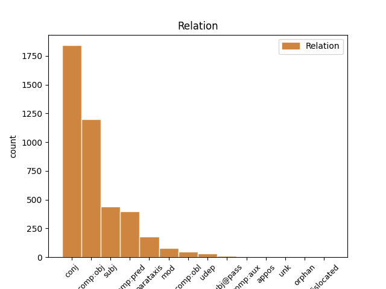
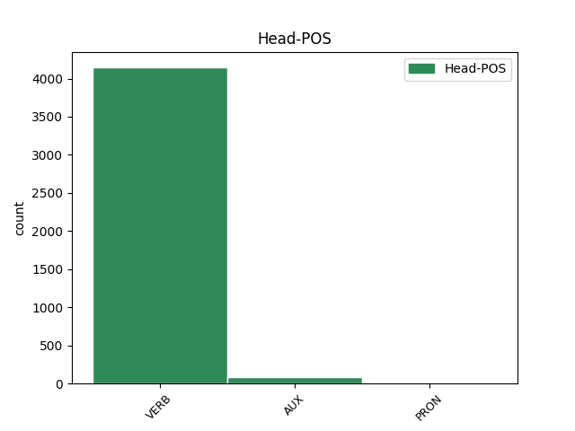
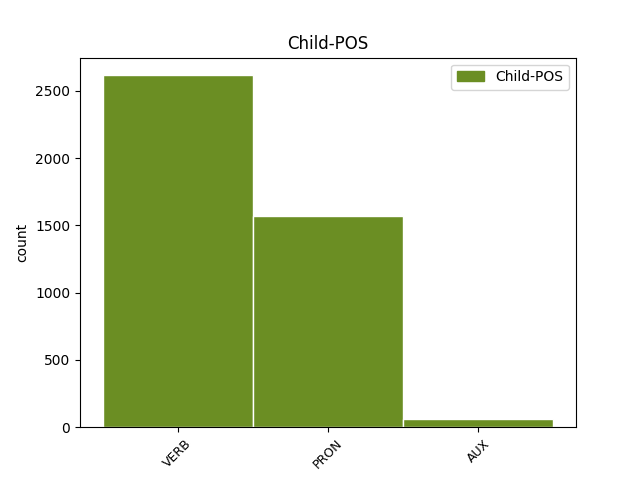

Distribution of features within this leaf



Agreement Rules sorted by frequency.
- When the dependent token is the conjunct(conj) of the head token, and the dependent token is VERB.
1 و _ _ _ _ 0 _ _ _
2 قالت _ _ _ _ 0 _ _ _
3 وكالة _ _ _ _ 0 _ _ _
4 انباء _ _ _ _ 0 _ _ _
5 الشرق _ _ _ _ 0 _ _ _
6 الاوسط _ _ _ _ 0 _ _ _
7 المصرية _ _ _ _ 0 _ _ _
8 ان _ _ _ _ 0 _ _ _
9 شعث _ _ _ _ 0 _ _ _
10 ابلغ أَبلَغ VERB VP-A-3MS-- Aspect=Perf|Gender=Masc|Number=Sing|Person=3|Voice=Act 0 _ _ _
11 ماهر _ _ _ _ 0 _ _ _
12 نتائج _ _ _ _ 0 _ _ _
13 المحادثات _ _ _ _ 0 _ _ _
14 التى _ _ _ _ 0 _ _ _
15 أجرا _ _ _ _ 0 _ _ _
16 ها _ _ _ _ 0 _ _ _
17 باول _ _ _ _ 0 _ _ _
18 مع _ _ _ _ 0 _ _ _
19 رئيس _ _ _ _ 0 _ _ _
20 الوزراء _ _ _ _ 0 _ _ _
21 الفلسطينى _ _ _ _ 0 _ _ _
22 محمود _ _ _ _ 0 _ _ _
23 عباس _ _ _ _ 0 _ _ _
24 / _ _ _ _ 0 _ _ _
25 أبو _ _ _ _ 0 _ _ _
26 مازن _ _ _ _ 0 _ _ _
27 / _ _ _ _ 0 _ _ _
28 فى _ _ _ _ 0 _ _ _
29 اريحا _ _ _ _ 0 _ _ _
30 فى _ _ _ _ 0 _ _ _
31 وقت _ _ _ _ 0 _ _ _
32 سابق _ _ _ _ 0 _ _ _
33 من _ _ _ _ 0 _ _ _
34 اليوم _ _ _ _ 0 _ _ _
35 حيث _ _ _ _ 0 _ _ _
36 اكد أَكَّد VERB VP-A-3MS-- Aspect=Perf|Gender=Masc|Number=Sing|Person=3|Voice=Act 10 conj _ Gloss=affirm,assure,confirm,emphasize,guarantee|LTranslit=ʾakkad|Root='_k_d|Translit=ʾakkada|Vform=أَكَّدَ
37 الجانب _ _ _ _ 0 _ _ _
38 الفلسطينى _ _ _ _ 0 _ _ _
39 على _ _ _ _ 0 _ _ _
40 موقف _ _ _ _ 0 _ _ _
41 ه _ _ _ _ 0 _ _ _
42 الثابت _ _ _ _ 0 _ _ _
43 إزاء _ _ _ _ 0 _ _ _
44 خريطة _ _ _ _ 0 _ _ _
45 الطريق _ _ _ _ 0 _ _ _
46 ، _ _ _ _ 0 _ _ _
47 الخطة _ _ _ _ 0 _ _ _
48 السلمية _ _ _ _ 0 _ _ _
49 التى _ _ _ _ 0 _ _ _
50 أعدت _ _ _ _ 0 _ _ _
51 ها _ _ _ _ 0 _ _ _
52 الولايات _ _ _ _ 0 _ _ _
53 المتحدة _ _ _ _ 0 _ _ _
54 ل _ _ _ _ 0 _ _ _
55 إحلال _ _ _ _ 0 _ _ _
56 السلام _ _ _ _ 0 _ _ _
57 فى _ _ _ _ 0 _ _ _
58 المنطقة _ _ _ _ 0 _ _ _
59 و _ _ _ _ 0 _ _ _
60 إقامة _ _ _ _ 0 _ _ _
61 دولة _ _ _ _ 0 _ _ _
62 فلسطينية _ _ _ _ 0 _ _ _
63 مستقلة _ _ _ _ 0 _ _ _
64 عام _ _ _ _ 0 _ _ _
65 2005 _ _ _ _ 0 _ _ _
66 ب _ _ _ _ 0 _ _ _
67 جانب _ _ _ _ 0 _ _ _
68 إسرائيل _ _ _ _ 0 _ _ _
69 . _ _ _ _ 0 _ _ _
1 و _ _ _ _ 0 _ _ _
2 قالت _ _ _ _ 0 _ _ _
3 وكالة _ _ _ _ 0 _ _ _
4 انباء _ _ _ _ 0 _ _ _
5 الشرق _ _ _ _ 0 _ _ _
6 الاوسط _ _ _ _ 0 _ _ _
7 المصرية _ _ _ _ 0 _ _ _
8 ان _ _ _ _ 0 _ _ _
9 شعث _ _ _ _ 0 _ _ _
10 ابلغ _ _ _ _ 0 _ _ _
11 ماهر _ _ _ _ 0 _ _ _
12 نتائج _ _ _ _ 0 _ _ _
13 المحادثات _ _ _ _ 0 _ _ _
14 التى _ _ _ _ 0 _ _ _
15 أجرا _ _ _ _ 0 _ _ _
16 ها _ _ _ _ 0 _ _ _
17 باول _ _ _ _ 0 _ _ _
18 مع _ _ _ _ 0 _ _ _
19 رئيس _ _ _ _ 0 _ _ _
20 الوزراء _ _ _ _ 0 _ _ _
21 الفلسطينى _ _ _ _ 0 _ _ _
22 محمود _ _ _ _ 0 _ _ _
23 عباس _ _ _ _ 0 _ _ _
24 / _ _ _ _ 0 _ _ _
25 أبو _ _ _ _ 0 _ _ _
26 مازن _ _ _ _ 0 _ _ _
27 / _ _ _ _ 0 _ _ _
28 فى _ _ _ _ 0 _ _ _
29 اريحا _ _ _ _ 0 _ _ _
30 فى _ _ _ _ 0 _ _ _
31 وقت _ _ _ _ 0 _ _ _
32 سابق _ _ _ _ 0 _ _ _
33 من _ _ _ _ 0 _ _ _
34 اليوم _ _ _ _ 0 _ _ _
35 حيث _ _ _ _ 0 _ _ _
36 اكد _ _ _ _ 0 _ _ _
37 الجانب _ _ _ _ 0 _ _ _
38 الفلسطينى _ _ _ _ 0 _ _ _
39 على _ _ _ _ 0 _ _ _
40 موقف _ _ _ _ 0 _ _ _
41 ه _ _ _ _ 0 _ _ _
42 الثابت _ _ _ _ 0 _ _ _
43 إزاء _ _ _ _ 0 _ _ _
44 خريطة _ _ _ _ 0 _ _ _
45 الطريق _ _ _ _ 0 _ _ _
46 ، _ _ _ _ 0 _ _ _
47 الخطة _ _ _ _ 0 _ _ _
48 السلمية _ _ _ _ 0 _ _ _
49 التى _ _ _ _ 0 _ _ _
50 أعدت أَعَدّ VERB VP-A-3FS-- Aspect=Perf|Gender=Fem|Number=Sing|Person=3|Voice=Act 0 _ _ _
51 ها هُوَ PRON SP---3FS4- Case=Acc|Gender=Fem|Number=Sing|Person=3|PronType=Prs 50 comp:obj _ Gloss=he,it,she|LTranslit=huwa|Translit=hā|Vform=هَا
52 الولايات _ _ _ _ 0 _ _ _
53 المتحدة _ _ _ _ 0 _ _ _
54 ل _ _ _ _ 0 _ _ _
55 إحلال _ _ _ _ 0 _ _ _
56 السلام _ _ _ _ 0 _ _ _
57 فى _ _ _ _ 0 _ _ _
58 المنطقة _ _ _ _ 0 _ _ _
59 و _ _ _ _ 0 _ _ _
60 إقامة _ _ _ _ 0 _ _ _
61 دولة _ _ _ _ 0 _ _ _
62 فلسطينية _ _ _ _ 0 _ _ _
63 مستقلة _ _ _ _ 0 _ _ _
64 عام _ _ _ _ 0 _ _ _
65 2005 _ _ _ _ 0 _ _ _
66 ب _ _ _ _ 0 _ _ _
67 جانب _ _ _ _ 0 _ _ _
68 إسرائيل _ _ _ _ 0 _ _ _
69 . _ _ _ _ 0 _ _ _
1 و _ _ _ _ 0 _ _ _
2 تردد _ _ _ _ 0 _ _ _
3 أن _ _ _ _ 0 _ _ _
4 هم هُوَ PRON SP---3MP4- Case=Acc|Gender=Masc|Number=Plur|Person=3|PronType=Prs 5 subj _ Gloss=he,it,she|LTranslit=huwa|Translit=hum|Vform=هُم
5 جلبوا جَلَب VERB VP-A-3MP-- Aspect=Perf|Gender=Masc|Number=Plur|Person=3|Voice=Act 0 _ _ _
6 مع _ _ _ _ 0 _ _ _
7 هم _ _ _ _ 0 _ _ _
8 المتفجرات _ _ _ _ 0 _ _ _
9 و _ _ _ _ 0 _ _ _
10 الذخيرة _ _ _ _ 0 _ _ _
11 لأن _ _ _ _ 0 _ _ _
12 ذلك _ _ _ _ 0 _ _ _
13 جزء _ _ _ _ 0 _ _ _
14 من _ _ _ _ 0 _ _ _
15 العادات _ _ _ _ 0 _ _ _
16 المتبعة _ _ _ _ 0 _ _ _
17 فى _ _ _ _ 0 _ _ _
18 قرية _ _ _ _ 0 _ _ _
19 هم _ _ _ _ 0 _ _ _
20 حيث _ _ _ _ 0 _ _ _
21 اعتاد _ _ _ _ 0 _ _ _
22 سكان _ _ _ _ 0 _ _ _
23 ها _ _ _ _ 0 _ _ _
24 اطلاق _ _ _ _ 0 _ _ _
25 النار _ _ _ _ 0 _ _ _
26 فى _ _ _ _ 0 _ _ _
27 الهواء _ _ _ _ 0 _ _ _
28 خلال _ _ _ _ 0 _ _ _
29 هذه _ _ _ _ 0 _ _ _
30 الاحتفالات _ _ _ _ 0 _ _ _
31 . _ _ _ _ 0 _ _ _
1 و _ _ _ _ 0 _ _ _
2 أشار _ _ _ _ 0 _ _ _
3 العيار _ _ _ _ 0 _ _ _
4 الى _ _ _ _ 0 _ _ _
5 استمرار _ _ _ _ 0 _ _ _
6 المساعدات _ _ _ _ 0 _ _ _
7 و _ _ _ _ 0 _ _ _
8 في _ _ _ _ 0 _ _ _
9 جميع _ _ _ _ 0 _ _ _
10 المجالات _ _ _ _ 0 _ _ _
11 الغذائية _ _ _ _ 0 _ _ _
12 و _ _ _ _ 0 _ _ _
13 الدوائية _ _ _ _ 0 _ _ _
14 و _ _ _ _ 0 _ _ _
15 الصحية _ _ _ _ 0 _ _ _
16 و _ _ _ _ 0 _ _ _
17 غير _ _ _ _ 0 _ _ _
18 ها _ _ _ _ 0 _ _ _
19 موضحا _ _ _ _ 0 _ _ _
20 أن _ _ _ _ 0 _ _ _
21 ما _ _ _ _ 0 _ _ _
22 يتعلق _ _ _ _ 0 _ _ _
23 ب _ _ _ _ 0 _ _ _
24 وزارة _ _ _ _ 0 _ _ _
25 الكهرباء _ _ _ _ 0 _ _ _
26 و _ _ _ _ 0 _ _ _
27 الماء _ _ _ _ 0 _ _ _
28 ف _ _ _ _ 0 _ _ _
29 إن _ _ _ _ 0 _ _ _
30 ها _ _ _ _ 0 _ _ _
31 لا _ _ _ _ 0 _ _ _
32 تزال زَال VERB VIIA-3FS-- Aspect=Imp|Gender=Fem|Mood=Ind|Number=Sing|Person=3|VerbForm=Fin|Voice=Act 0 _ _ _
33 تقدم أَقدَم VERB VIJA-3FS-- Aspect=Imp|Gender=Fem|Mood=Jus|Number=Sing|Person=3|VerbForm=Fin|Voice=Act 32 comp:pred _ Gloss=approach,be_undertaken,tackle,undertake|LTranslit=ʾaqdam|Root=q_d_m|Translit=tuqdim|Vform=تُقدِم
34 المياه _ _ _ _ 0 _ _ _
35 العذبة _ _ _ _ 0 _ _ _
36 الى _ _ _ _ 0 _ _ _
37 العراق _ _ _ _ 0 _ _ _
38 " _ _ _ _ 0 _ _ _
39 ف _ _ _ _ 0 _ _ _
40 هناك _ _ _ _ 0 _ _ _
41 أنبوب _ _ _ _ 0 _ _ _
42 يصب _ _ _ _ 0 _ _ _
43 يوميا _ _ _ _ 0 _ _ _
44 في _ _ _ _ 0 _ _ _
45 العراق _ _ _ _ 0 _ _ _
46 ب _ _ _ _ 0 _ _ _
47 طاقة _ _ _ _ 0 _ _ _
48 مليون _ _ _ _ 0 _ _ _
49 و _ _ _ _ 0 _ _ _
50 نصف _ _ _ _ 0 _ _ _
51 المليون _ _ _ _ 0 _ _ _
52 جالون _ _ _ _ 0 _ _ _
53 " _ _ _ _ 0 _ _ _
54 . _ _ _ _ 0 _ _ _
1 قرر قَرَّر VERB VP-A-3MS-- Aspect=Perf|Gender=Masc|Number=Sing|Person=3|Voice=Act 0 _ _ _
2 مجلس _ _ _ _ 0 _ _ _
3 الوزراءالكويتي _ _ _ _ 0 _ _ _
4 اليوم _ _ _ _ 0 _ _ _
5 ارسال _ _ _ _ 0 _ _ _
6 ثمانى _ _ _ _ 0 _ _ _
7 وحدات _ _ _ _ 0 _ _ _
8 ل _ _ _ _ 0 _ _ _
9 تكرير _ _ _ _ 0 _ _ _
10 و _ _ _ _ 0 _ _ _
11 تحلية _ _ _ _ 0 _ _ _
12 المياه _ _ _ _ 0 _ _ _
13 الى _ _ _ _ 0 _ _ _
14 العراق _ _ _ _ 0 _ _ _
15 ل _ _ _ _ 0 _ _ _
16 توفير _ _ _ _ 0 _ _ _
17 المياه _ _ _ _ 0 _ _ _
18 الصالحة _ _ _ _ 0 _ _ _
19 ل _ _ _ _ 0 _ _ _
20 الشرب _ _ _ _ 0 _ _ _
21 ل _ _ _ _ 0 _ _ _
22 الشعب _ _ _ _ 0 _ _ _
23 العراقي _ _ _ _ 0 _ _ _
24 في _ _ _ _ 0 _ _ _
25 مبادرة _ _ _ _ 0 _ _ _
26 كويتية _ _ _ _ 0 _ _ _
27 ل _ _ _ _ 0 _ _ _
28 الحد _ _ _ _ 0 _ _ _
29 من _ _ _ _ 0 _ _ _
30 انتشار _ _ _ _ 0 _ _ _
31 مرض _ _ _ _ 0 _ _ _
32 الكوليرا _ _ _ _ 0 _ _ _
33 الذي _ _ _ _ 0 _ _ _
34 اكتشف _ _ _ _ 0 _ _ _
35 هناك _ _ _ _ 0 _ _ _
36 مؤخرا _ _ _ _ 0 _ _ _
37 . _ _ _ _ 0 _ _ _
38 جاء جَاء VERB VP-A-3MS-- Aspect=Perf|Gender=Masc|Number=Sing|Person=3|Voice=Act 1 parataxis _ Gloss=arrive,come,occur|LTranslit=ǧāʾ|Root=^g_y_'|Translit=ǧāʾa|Vform=جَاءَ
39 ذلك _ _ _ _ 0 _ _ _
40 فى _ _ _ _ 0 _ _ _
41 تصريح _ _ _ _ 0 _ _ _
42 خاص _ _ _ _ 0 _ _ _
43 ادلى _ _ _ _ 0 _ _ _
44 ب _ _ _ _ 0 _ _ _
45 ه _ _ _ _ 0 _ _ _
46 وزير _ _ _ _ 0 _ _ _
47 الكهرباء _ _ _ _ 0 _ _ _
48 و _ _ _ _ 0 _ _ _
49 الماء _ _ _ _ 0 _ _ _
50 و _ _ _ _ 0 _ _ _
51 وزير _ _ _ _ 0 _ _ _
52 الشؤون _ _ _ _ 0 _ _ _
53 الاجتماعية _ _ _ _ 0 _ _ _
54 و _ _ _ _ 0 _ _ _
55 العمل _ _ _ _ 0 _ _ _
56 الكويتى _ _ _ _ 0 _ _ _
57 طلال _ _ _ _ 0 _ _ _
58 العيار _ _ _ _ 0 _ _ _
59 ل _ _ _ _ 0 _ _ _
60 وكالة _ _ _ _ 0 _ _ _
61 الانباء _ _ _ _ 0 _ _ _
62 الكويتية _ _ _ _ 0 _ _ _
63 / _ _ _ _ 0 _ _ _
64 كونا _ _ _ _ 0 _ _ _
65 / _ _ _ _ 0 _ _ _
66 فى _ _ _ _ 0 _ _ _
67 اعقاب _ _ _ _ 0 _ _ _
68 الاجتماع _ _ _ _ 0 _ _ _
69 الاسبوعي _ _ _ _ 0 _ _ _
70 ل _ _ _ _ 0 _ _ _
71 مجلس _ _ _ _ 0 _ _ _
72 الوزراء _ _ _ _ 0 _ _ _
73 المنعقد _ _ _ _ 0 _ _ _
74 هنا _ _ _ _ 0 _ _ _
75 اليوم _ _ _ _ 0 _ _ _
76 . _ _ _ _ 0 _ _ _
1 تقرير _ _ _ _ 0 _ _ _
2 اخبارى _ _ _ _ 0 _ _ _
3 : _ _ _ _ 0 _ _ _
4 الشركات _ _ _ _ 0 _ _ _
5 الهندية _ _ _ _ 0 _ _ _
6 تتطلع _ _ _ _ 0 _ _ _
7 ل _ _ _ _ 0 _ _ _
8 الفوز _ _ _ _ 0 _ _ _
9 ب _ _ _ _ 0 _ _ _
10 عقود _ _ _ _ 0 _ _ _
11 ل _ _ _ _ 0 _ _ _
12 إعادة _ _ _ _ 0 _ _ _
13 اعمار _ _ _ _ 0 _ _ _
14 العراق _ _ _ _ 0 _ _ _
15 / _ _ _ _ 0 _ _ _
16 اضافة _ _ _ _ 0 _ _ _
17 اولى _ _ _ _ 0 _ _ _
18 و _ _ _ _ 0 _ _ _
19 أخيرة _ _ _ _ 0 _ _ _
20 / _ _ _ _ 0 _ _ _
21 و _ _ _ _ 0 _ _ _
22 قال قَال VERB VP-A-3MS-- Aspect=Perf|Gender=Masc|Number=Sing|Person=3|Voice=Act 0 _ _ _
23 اميت _ _ _ _ 0 _ _ _
24 ميترا _ _ _ _ 0 _ _ _
25 الامين _ _ _ _ 0 _ _ _
26 العام _ _ _ _ 0 _ _ _
27 ل _ _ _ _ 0 _ _ _
28 اتحاد _ _ _ _ 0 _ _ _
29 غرف _ _ _ _ 0 _ _ _
30 الصناعة _ _ _ _ 0 _ _ _
31 و _ _ _ _ 0 _ _ _
32 التجارة _ _ _ _ 0 _ _ _
33 الهندية _ _ _ _ 0 _ _ _
34 " _ _ _ _ 0 _ _ _
35 لقد _ _ _ _ 0 _ _ _
36 شهد شَهِد VERB VP-A-3MS-- Aspect=Perf|Gender=Masc|Number=Sing|Person=3|Voice=Act 22 comp:obj _ Gloss=observe,witness|LTranslit=šahid|Root=^s_h_d|Translit=šahida|Vform=شَهِدَ
37 هذا _ _ _ _ 0 _ _ _
38 البرنامج _ _ _ _ 0 _ _ _
39 ب _ _ _ _ 0 _ _ _
40 الفعل _ _ _ _ 0 _ _ _
41 عقودا _ _ _ _ 0 _ _ _
42 تصل _ _ _ _ 0 _ _ _
43 قيمة _ _ _ _ 0 _ _ _
44 ها _ _ _ _ 0 _ _ _
45 الى _ _ _ _ 0 _ _ _
46 30 _ _ _ _ 0 _ _ _
47 مليار _ _ _ _ 0 _ _ _
48 روبية _ _ _ _ 0 _ _ _
49 / _ _ _ _ 0 _ _ _
50 632 _ _ _ _ 0 _ _ _
51 مليون _ _ _ _ 0 _ _ _
52 دولار _ _ _ _ 0 _ _ _
53 امريكى _ _ _ _ 0 _ _ _
54 / _ _ _ _ 0 _ _ _
55 حصلت _ _ _ _ 0 _ _ _
56 علي _ _ _ _ 0 _ _ _
57 ها _ _ _ _ 0 _ _ _
58 الشركات _ _ _ _ 0 _ _ _
59 الهندية _ _ _ _ 0 _ _ _
60 . _ _ _ _ 0 _ _ _
1 و _ _ _ _ 0 _ _ _
2 دخل دَخَل VERB VP-A-3MS-- Aspect=Perf|Gender=Masc|Number=Sing|Person=3|Voice=Act 0 _ _ _
3 جيمس _ _ _ _ 0 _ _ _
4 ماجواير _ _ _ _ 0 _ _ _
5 عضو _ _ _ _ 0 _ _ _
6 فريق _ _ _ _ 0 _ _ _
7 خبراء _ _ _ _ 0 _ _ _
8 منظمة _ _ _ _ 0 _ _ _
9 الصحة _ _ _ _ 0 _ _ _
10 الذى _ _ _ _ 0 _ _ _
11 يتفقد _ _ _ _ 0 _ _ _
12 جهود _ _ _ _ 0 _ _ _
13 مكافحة _ _ _ _ 0 _ _ _
14 سارس _ _ _ _ 0 _ _ _
15 و _ _ _ _ 0 _ _ _
16 علاج _ _ _ _ 0 _ _ _
17 ه _ _ _ _ 0 _ _ _
18 فى _ _ _ _ 0 _ _ _
19 المقاطعة _ _ _ _ 0 _ _ _
20 دخل دَخَل VERB VP-A-3MS-- Aspect=Perf|Gender=Masc|Number=Sing|Person=3|Voice=Act 2 mod _ Gloss=enter|LTranslit=daḫal|Root=d__h_l|Translit=daḫala|Vform=دَخَلَ
21 الى _ _ _ _ 0 _ _ _
22 القرية _ _ _ _ 0 _ _ _
23 التى _ _ _ _ 0 _ _ _
24 تقع _ _ _ _ 0 _ _ _
25 على _ _ _ _ 0 _ _ _
26 بعد _ _ _ _ 0 _ _ _
27 60 _ _ _ _ 0 _ _ _
28 كيلومترا _ _ _ _ 0 _ _ _
29 عن _ _ _ _ 0 _ _ _
30 عاصمة _ _ _ _ 0 _ _ _
31 المقاطعة _ _ _ _ 0 _ _ _
32 شيجياتشوانج _ _ _ _ 0 _ _ _
33 . _ _ _ _ 0 _ _ _
1 ذكر _ _ _ _ 0 _ _ _
2 بوش _ _ _ _ 0 _ _ _
3 خلال _ _ _ _ 0 _ _ _
4 مؤتمر _ _ _ _ 0 _ _ _
5 صحفى _ _ _ _ 0 _ _ _
6 مشترك _ _ _ _ 0 _ _ _
7 مع _ _ _ _ 0 _ _ _
8 جون _ _ _ _ 0 _ _ _
9 هوارد _ _ _ _ 0 _ _ _
10 رئيس _ _ _ _ 0 _ _ _
11 الوزراء _ _ _ _ 0 _ _ _
12 الاسترالى _ _ _ _ 0 _ _ _
13 الزائر _ _ _ _ 0 _ _ _
14 ب _ _ _ _ 0 _ _ _
15 مزرعة _ _ _ _ 0 _ _ _
16 ه _ _ _ _ 0 _ _ _
17 الخاصة _ _ _ _ 0 _ _ _
18 فى _ _ _ _ 0 _ _ _
19 كراوفورد _ _ _ _ 0 _ _ _
20 ب _ _ _ _ 0 _ _ _
21 ولاية _ _ _ _ 0 _ _ _
22 تكساس _ _ _ _ 0 _ _ _
23 أن _ _ _ _ 0 _ _ _
24 " _ _ _ _ 0 _ _ _
25 ( _ _ _ _ 0 _ _ _
26 الرئيس _ _ _ _ 0 _ _ _
27 العراقى _ _ _ _ 0 _ _ _
28 ) _ _ _ _ 0 _ _ _
29 صدام _ _ _ _ 0 _ _ _
30 حسين _ _ _ _ 0 _ _ _
31 كان _ _ _ _ 0 _ _ _
32 لدي _ _ _ _ 0 _ _ _
33 ه _ _ _ _ 0 _ _ _
34 أسلحة _ _ _ _ 0 _ _ _
35 دمار _ _ _ _ 0 _ _ _
36 شامل _ _ _ _ 0 _ _ _
37 . _ _ _ _ 0 _ _ _
38 " _ _ _ _ 0 _ _ _
39 و _ _ _ _ 0 _ _ _
40 أضاف _ _ _ _ 0 _ _ _
41 أن _ _ _ _ 0 _ _ _
42 " _ _ _ _ 0 _ _ _
43 العراق _ _ _ _ 0 _ _ _
44 ب _ _ _ _ 0 _ _ _
45 حجم _ _ _ _ 0 _ _ _
46 ولاية _ _ _ _ 0 _ _ _
47 كاليفورنيا _ _ _ _ 0 _ _ _
48 و _ _ _ _ 0 _ _ _
49 ب _ _ _ _ 0 _ _ _
50 ه _ _ _ _ 0 _ _ _
51 أنفاق _ _ _ _ 0 _ _ _
52 و _ _ _ _ 0 _ _ _
53 كهوف _ _ _ _ 0 _ _ _
54 و _ _ _ _ 0 _ _ _
55 كافة _ _ _ _ 0 _ _ _
56 أنواع _ _ _ _ 0 _ _ _
57 المجمعات _ _ _ _ 0 _ _ _
58 . _ _ _ _ 0 _ _ _
59 " _ _ _ _ 0 _ _ _
60 و _ _ _ _ 0 _ _ _
61 تعهد _ _ _ _ 0 _ _ _
62 بوش _ _ _ _ 0 _ _ _
63 ب _ _ _ _ 0 _ _ _
64 عثور _ _ _ _ 0 _ _ _
65 الولايات _ _ _ _ 0 _ _ _
66 المتحدة _ _ _ _ 0 _ _ _
67 على _ _ _ _ 0 _ _ _
68 الأسلحة _ _ _ _ 0 _ _ _
69 التى _ _ _ _ 0 _ _ _
70 قالت _ _ _ _ 0 _ _ _
71 بغداد _ _ _ _ 0 _ _ _
72 إن _ _ _ _ 0 _ _ _
73 ها _ _ _ _ 0 _ _ _
74 دمرت دَمَّر VERB VP-A-3FS-- Aspect=Perf|Gender=Fem|Number=Sing|Person=3|Voice=Act 0 _ _ _
75 ها هُوَ PRON SP---3FS4- Case=Acc|Gender=Fem|Number=Sing|Person=3|PronType=Prs 74 comp:obl _ Gloss=he,it,she|LTranslit=huwa|Translit=hā|Vform=هَا
76 التزاما _ _ _ _ 0 _ _ _
77 ب _ _ _ _ 0 _ _ _
78 مطالب _ _ _ _ 0 _ _ _
79 الأمم _ _ _ _ 0 _ _ _
80 المتحدة _ _ _ _ 0 _ _ _
81 ب _ _ _ _ 0 _ _ _
82 نزع _ _ _ _ 0 _ _ _
83 الأسلحة _ _ _ _ 0 _ _ _
84 . _ _ _ _ 0 _ _ _
85 و _ _ _ _ 0 _ _ _
86 قال _ _ _ _ 0 _ _ _
87 بوش _ _ _ _ 0 _ _ _
88 " _ _ _ _ 0 _ _ _
89 ما _ _ _ _ 0 _ _ _
90 هى _ _ _ _ 0 _ _ _
91 إلا _ _ _ _ 0 _ _ _
92 مسألة _ _ _ _ 0 _ _ _
93 وقت _ _ _ _ 0 _ _ _
94 أمام _ _ _ _ 0 _ _ _
95 نا _ _ _ _ 0 _ _ _
96 حتى _ _ _ _ 0 _ _ _
97 نقوم _ _ _ _ 0 _ _ _
98 ب _ _ _ _ 0 _ _ _
99 ذٰلك _ _ _ _ 0 _ _ _
100 . _ _ _ _ 0 _ _ _
101 " _ _ _ _ 0 _ _ _
102 و _ _ _ _ 0 _ _ _
103 كان _ _ _ _ 0 _ _ _
104 بوش _ _ _ _ 0 _ _ _
105 قد _ _ _ _ 0 _ _ _
106 اتهم _ _ _ _ 0 _ _ _
107 بغداد _ _ _ _ 0 _ _ _
108 مرارا _ _ _ _ 0 _ _ _
109 ب _ _ _ _ 0 _ _ _
110 تطوير _ _ _ _ 0 _ _ _
111 و _ _ _ _ 0 _ _ _
112 حيازة _ _ _ _ 0 _ _ _
113 أسلحة _ _ _ _ 0 _ _ _
114 دمار _ _ _ _ 0 _ _ _
115 شامل _ _ _ _ 0 _ _ _
116 و _ _ _ _ 0 _ _ _
117 استخدم _ _ _ _ 0 _ _ _
118 هذه _ _ _ _ 0 _ _ _
119 المزاعم _ _ _ _ 0 _ _ _
120 ك _ _ _ _ 0 _ _ _
121 ذريعة _ _ _ _ 0 _ _ _
122 ل _ _ _ _ 0 _ _ _
123 شن _ _ _ _ 0 _ _ _
124 الحرب _ _ _ _ 0 _ _ _
125 . _ _ _ _ 0 _ _ _
1 و _ _ _ _ 0 _ _ _
2 قالت _ _ _ _ 0 _ _ _
3 الصحيفة _ _ _ _ 0 _ _ _
4 ان _ _ _ _ 0 _ _ _
5 الاقتراح _ _ _ _ 0 _ _ _
6 قد _ _ _ _ 0 _ _ _
7 يحظى _ _ _ _ 0 _ _ _
8 ب _ _ _ _ 0 _ _ _
9 الترحيب _ _ _ _ 0 _ _ _
10 فى _ _ _ _ 0 _ _ _
11 المنطقة _ _ _ _ 0 _ _ _
12 ، _ _ _ _ 0 _ _ _
13 لٰكن _ _ _ _ 0 _ _ _
14 ها _ _ _ _ 0 _ _ _
15 نقلت _ _ _ _ 0 _ _ _
16 ايضا _ _ _ _ 0 _ _ _
17 عن _ _ _ _ 0 _ _ _
18 المسئول _ _ _ _ 0 _ _ _
19 الامريكى _ _ _ _ 0 _ _ _
20 الذى _ _ _ _ 0 _ _ _
21 اعلن _ _ _ _ 0 _ _ _
22 الخبر _ _ _ _ 0 _ _ _
23 قول _ _ _ _ 0 _ _ _
24 ه _ _ _ _ 0 _ _ _
25 ان _ _ _ _ 0 _ _ _
26 الرئيس _ _ _ _ 0 _ _ _
27 " _ _ _ _ 0 _ _ _
28 يدرك _ _ _ _ 0 _ _ _
29 ان _ _ _ _ 0 _ _ _
30 هذه _ _ _ _ 0 _ _ _
31 مهمة _ _ _ _ 0 _ _ _
32 صعبة _ _ _ _ 0 _ _ _
33 و _ _ _ _ 0 _ _ _
34 تتطلب _ _ _ _ 0 _ _ _
35 قيادة _ _ _ _ 0 _ _ _
36 جريئة _ _ _ _ 0 _ _ _
37 من _ _ _ _ 0 _ _ _
38 العديد _ _ _ _ 0 _ _ _
39 من _ _ _ _ 0 _ _ _
40 الاطراف _ _ _ _ 0 _ _ _
41 . _ _ _ _ 0 _ _ _
42 " _ _ _ _ 0 _ _ _
43 كما _ _ _ _ 0 _ _ _
44 نقلت _ _ _ _ 0 _ _ _
45 الصحيفة _ _ _ _ 0 _ _ _
46 عن _ _ _ _ 0 _ _ _
47 ديفيد _ _ _ _ 0 _ _ _
48 ماكوفيسكى _ _ _ _ 0 _ _ _
49 من _ _ _ _ 0 _ _ _
50 معهد _ _ _ _ 0 _ _ _
51 واشنطن _ _ _ _ 0 _ _ _
52 ل _ _ _ _ 0 _ _ _
53 سياسة _ _ _ _ 0 _ _ _
54 الشرق _ _ _ _ 0 _ _ _
55 الادنى _ _ _ _ 0 _ _ _
56 قول _ _ _ _ 0 _ _ _
57 ه _ _ _ _ 0 _ _ _
58 ان _ _ _ _ 0 _ _ _
59 اتفاقية _ _ _ _ 0 _ _ _
60 التجارة _ _ _ _ 0 _ _ _
61 الحرة _ _ _ _ 0 _ _ _
62 فى _ _ _ _ 0 _ _ _
63 المنطقة _ _ _ _ 0 _ _ _
64 س _ _ _ _ 0 _ _ _
65 تكون كَان AUX VIIA-3FS-- Aspect=Imp|Gender=Fem|Mood=Ind|Number=Sing|Person=3|VerbForm=Fin|Voice=Act 0 _ _ _
66 مفيدة _ _ _ _ 0 _ _ _
67 ، _ _ _ _ 0 _ _ _
68 لٰكن _ _ _ _ 0 _ _ _
69 ها _ _ _ _ 0 _ _ _
70 لن _ _ _ _ 0 _ _ _
71 تكون كَان AUX VISA-3FS-- Aspect=Imp|Gender=Fem|Mood=Sub|Number=Sing|Person=3|VerbForm=Fin|Voice=Act 65 conj _ Gloss=be,exist,is|LTranslit=kān|Root=k_w_n|Translit=takūna|Vform=تَكُونَ
72 كافية _ _ _ _ 0 _ _ _
73 ل _ _ _ _ 0 _ _ _
74 دفع _ _ _ _ 0 _ _ _
75 العرب _ _ _ _ 0 _ _ _
76 و _ _ _ _ 0 _ _ _
77 الإسرائيليين _ _ _ _ 0 _ _ _
78 الى _ _ _ _ 0 _ _ _
79 صنع _ _ _ _ 0 _ _ _
80 السلام _ _ _ _ 0 _ _ _
81 " _ _ _ _ 0 _ _ _
82 ف _ _ _ _ 0 _ _ _
83 هناك _ _ _ _ 0 _ _ _
84 بعض _ _ _ _ 0 _ _ _
85 القضايا _ _ _ _ 0 _ _ _
86 الشائكة _ _ _ _ 0 _ _ _
87 ل _ _ _ _ 0 _ _ _
88 الغاية _ _ _ _ 0 _ _ _
89 . _ _ _ _ 0 _ _ _
90 " _ _ _ _ 0 _ _ _
1 و _ _ _ _ 0 _ _ _
2 قد _ _ _ _ 0 _ _ _
3 عثر _ _ _ _ 0 _ _ _
4 على _ _ _ _ 0 _ _ _
5 هؤلاء _ _ _ _ 0 _ _ _
6 و _ _ _ _ 0 _ _ _
7 ب _ _ _ _ 0 _ _ _
8 حوزة _ _ _ _ 0 _ _ _
9 هم _ _ _ _ 0 _ _ _
10 متفجرات _ _ _ _ 0 _ _ _
11 و _ _ _ _ 0 _ _ _
12 ذخيرة _ _ _ _ 0 _ _ _
13 و _ _ _ _ 0 _ _ _
14 هو هُوَ PRON SP---3MS1- Case=Nom|Gender=Masc|Number=Sing|Person=3|PronType=Prs 17 udep _ Gloss=he,it,she|LTranslit=huwa|Translit=huwa|Vform=هُوَ
15 الامر _ _ _ _ 0 _ _ _
16 الذى _ _ _ _ 0 _ _ _
17 اثار أَثَار VERB VP-A-3MS-- Aspect=Perf|Gender=Masc|Number=Sing|Person=3|Voice=Act 0 _ _ _
18 المخاوف _ _ _ _ 0 _ _ _
19 من _ _ _ _ 0 _ _ _
20 احتمال _ _ _ _ 0 _ _ _
21 ان _ _ _ _ 0 _ _ _
22 يكونوا _ _ _ _ 0 _ _ _
23 اعضاء _ _ _ _ 0 _ _ _
24 فى _ _ _ _ 0 _ _ _
25 شبكة _ _ _ _ 0 _ _ _
26 الجماعة _ _ _ _ 0 _ _ _
27 الاسلامية _ _ _ _ 0 _ _ _
28 الارهابية _ _ _ _ 0 _ _ _
29 او _ _ _ _ 0 _ _ _
30 جماعات _ _ _ _ 0 _ _ _
31 متمردة _ _ _ _ 0 _ _ _
32 اسلامية _ _ _ _ 0 _ _ _
33 فى _ _ _ _ 0 _ _ _
34 الفلبين _ _ _ _ 0 _ _ _
35 . _ _ _ _ 0 _ _ _
1 و _ _ _ _ 0 _ _ _
2 ذكرت _ _ _ _ 0 _ _ _
3 الوكالة _ _ _ _ 0 _ _ _
4 الوطنية _ _ _ _ 0 _ _ _
5 اللبنانية _ _ _ _ 0 _ _ _
6 ل _ _ _ _ 0 _ _ _
7 الإعلام _ _ _ _ 0 _ _ _
8 ان _ _ _ _ 0 _ _ _
9 السفيرالامريكى _ _ _ _ 0 _ _ _
10 قال قَال VERB VP-A-3MS-- Aspect=Perf|Gender=Masc|Number=Sing|Person=3|Voice=Act 0 _ _ _
11 بعد _ _ _ _ 0 _ _ _
12 اللقاء _ _ _ _ 0 _ _ _
13 " _ _ _ _ 0 _ _ _
14 كان كَان AUX VP-A-3MS-- Aspect=Perf|Gender=Masc|Number=Sing|Person=3|Voice=Act 10 comp:obj _ Gloss=be,exist,is|LTranslit=kān|Root=k_w_n|Translit=kāna|Vform=كَانَ
15 الاجتماع _ _ _ _ 0 _ _ _
16 جيداً _ _ _ _ 0 _ _ _
17 و _ _ _ _ 0 _ _ _
18 من _ _ _ _ 0 _ _ _
19 دواعي _ _ _ _ 0 _ _ _
20 سرور _ _ _ _ 0 _ _ _
21 نا _ _ _ _ 0 _ _ _
22 ان _ _ _ _ 0 _ _ _
23 نلتقي _ _ _ _ 0 _ _ _
24 رئيس _ _ _ _ 0 _ _ _
25 الوزراء _ _ _ _ 0 _ _ _
26 و _ _ _ _ 0 _ _ _
27 ناقشنا _ _ _ _ 0 _ _ _
28 القضايا _ _ _ _ 0 _ _ _
29 الاقليمية _ _ _ _ 0 _ _ _
30 و _ _ _ _ 0 _ _ _
31 خارطة _ _ _ _ 0 _ _ _
32 الطريق _ _ _ _ 0 _ _ _
33 على _ _ _ _ 0 _ _ _
34 طاولة _ _ _ _ 0 _ _ _
35 البحث _ _ _ _ 0 _ _ _
36 و _ _ _ _ 0 _ _ _
37 سوف _ _ _ _ 0 _ _ _
38 نبحث _ _ _ _ 0 _ _ _
39 هذا _ _ _ _ 0 _ _ _
40 الموضوع _ _ _ _ 0 _ _ _
41 في _ _ _ _ 0 _ _ _
42 كل _ _ _ _ 0 _ _ _
43 المنطقة _ _ _ _ 0 _ _ _
44 ب _ _ _ _ 0 _ _ _
45 ما _ _ _ _ 0 _ _ _
46 في _ _ _ _ 0 _ _ _
47 ها _ _ _ _ 0 _ _ _
48 لبنان _ _ _ _ 0 _ _ _
49 و _ _ _ _ 0 _ _ _
50 سوريا _ _ _ _ 0 _ _ _
51 و _ _ _ _ 0 _ _ _
52 نحن _ _ _ _ 0 _ _ _
53 نتطلع _ _ _ _ 0 _ _ _
54 الى _ _ _ _ 0 _ _ _
55 زيارة _ _ _ _ 0 _ _ _
56 وزير _ _ _ _ 0 _ _ _
57 الخارجية _ _ _ _ 0 _ _ _
58 الامريكي _ _ _ _ 0 _ _ _
59 كولين _ _ _ _ 0 _ _ _
60 باول _ _ _ _ 0 _ _ _
61 غدا _ _ _ _ 0 _ _ _
62 الى _ _ _ _ 0 _ _ _
63 بيروت _ _ _ _ 0 _ _ _
64 . _ _ _ _ 0 _ _ _
65 " _ _ _ _ 0 _ _ _
1 و _ _ _ _ 0 _ _ _
2 صرحت _ _ _ _ 0 _ _ _
3 باستور _ _ _ _ 0 _ _ _
4 فى _ _ _ _ 0 _ _ _
5 اعقاب _ _ _ _ 0 _ _ _
6 عرض _ _ _ _ 0 _ _ _
7 قدمت _ _ _ _ 0 _ _ _
8 ه _ _ _ _ 0 _ _ _
9 حول _ _ _ _ 0 _ _ _
10 قانون _ _ _ _ 0 _ _ _
11 اطار _ _ _ _ 0 _ _ _
12 العمل _ _ _ _ 0 _ _ _
13 الخاص _ _ _ _ 0 _ _ _
14 ب _ _ _ _ 0 _ _ _
15 المتخصصين _ _ _ _ 0 _ _ _
16 فى _ _ _ _ 0 _ _ _
17 المجال _ _ _ _ 0 _ _ _
18 الصحى _ _ _ _ 0 _ _ _
19 خلال _ _ _ _ 0 _ _ _
20 اجتماع _ _ _ _ 0 _ _ _
21 ل _ _ _ _ 0 _ _ _
22 مجلس _ _ _ _ 0 _ _ _
23 الوزراء _ _ _ _ 0 _ _ _
24 , _ _ _ _ 0 _ _ _
25 ب _ _ _ _ 0 _ _ _
26 أن _ _ _ _ 0 _ _ _
27 اسبانيا _ _ _ _ 0 _ _ _
28 س _ _ _ _ 0 _ _ _
29 تطرح _ _ _ _ 0 _ _ _
30 قوانين _ _ _ _ 0 _ _ _
31 ها _ _ _ _ 0 _ _ _
32 الخاصة _ _ _ _ 0 _ _ _
33 ب _ _ _ _ 0 _ _ _
34 اهتمام _ _ _ _ 0 _ _ _
35 ها _ _ _ _ 0 _ _ _
36 ب _ _ _ _ 0 _ _ _
37 السارس _ _ _ _ 0 _ _ _
38 على _ _ _ _ 0 _ _ _
39 اجتماع _ _ _ _ 0 _ _ _
40 وزراء _ _ _ _ 0 _ _ _
41 صحة _ _ _ _ 0 _ _ _
42 الاتحاد _ _ _ _ 0 _ _ _
43 الاوروبى _ _ _ _ 0 _ _ _
44 المقرر _ _ _ _ 0 _ _ _
45 عقد عَقَد VERB VP-A-3MS-- Aspect=Perf|Gender=Masc|Number=Sing|Person=3|Voice=Act 0 _ _ _
46 ه هُوَ PRON SP---3MS4- Case=Acc|Gender=Masc|Number=Sing|Person=3|PronType=Prs 45 mod _ Gloss=he,it,she|LTranslit=huwa|Translit=hu|Vform=هُ
47 يوم _ _ _ _ 0 _ _ _
48 6 _ _ _ _ 0 _ _ _
49 مايو _ _ _ _ 0 _ _ _
50 الحالى _ _ _ _ 0 _ _ _
51 . _ _ _ _ 0 _ _ _
1 و _ _ _ _ 0 _ _ _
2 قال _ _ _ _ 0 _ _ _
3 ماجواير _ _ _ _ 0 _ _ _
4 الذى _ _ _ _ 0 _ _ _
5 كان _ _ _ _ 0 _ _ _
6 يسير _ _ _ _ 0 _ _ _
7 عبر _ _ _ _ 0 _ _ _
8 القرية _ _ _ _ 0 _ _ _
9 الهادئة _ _ _ _ 0 _ _ _
10 أن _ _ _ _ 0 _ _ _
11 ه هُوَ PRON SP---3MS4- Case=Acc|Gender=Masc|Number=Sing|Person=3|PronType=Prs 12 subj@pass _ Gloss=he,it,she|LTranslit=huwa|Translit=hu|Vform=هُ
12 أعجب أُعجِب VERB VP-P-3MS-- Aspect=Perf|Gender=Masc|Number=Sing|Person=3|Voice=Pass 0 _ _ _
13 ب _ _ _ _ 0 _ _ _
14 تعاون _ _ _ _ 0 _ _ _
15 القرويين _ _ _ _ 0 _ _ _
16 الجيد _ _ _ _ 0 _ _ _
17 مع _ _ _ _ 0 _ _ _
18 النظام _ _ _ _ 0 _ _ _
19 " _ _ _ _ 0 _ _ _
20 . _ _ _ _ 0 _ _ _
21 و _ _ _ _ 0 _ _ _
22 أضاف _ _ _ _ 0 _ _ _
23 " _ _ _ _ 0 _ _ _
24 إن _ _ _ _ 0 _ _ _
25 ها _ _ _ _ 0 _ _ _
26 المسئولية _ _ _ _ 0 _ _ _
27 الشخصية _ _ _ _ 0 _ _ _
28 التى _ _ _ _ 0 _ _ _
29 تجعل _ _ _ _ 0 _ _ _
30 النظام _ _ _ _ 0 _ _ _
31 يعمل _ _ _ _ 0 _ _ _
32 " _ _ _ _ 0 _ _ _
33 . _ _ _ _ 0 _ _ _
1 و _ _ _ _ 0 _ _ _
2 قال _ _ _ _ 0 _ _ _
3 سيد _ _ _ _ 0 _ _ _
4 حامد _ _ _ _ 0 _ _ _
5 البر _ _ _ _ 0 _ _ _
6 فى _ _ _ _ 0 _ _ _
7 حفل _ _ _ _ 0 _ _ _
8 غذاء _ _ _ _ 0 _ _ _
9 " _ _ _ _ 0 _ _ _
10 ان _ _ _ _ 0 _ _ _
11 اهم _ _ _ _ 0 _ _ _
12 شيئ _ _ _ _ 0 _ _ _
13 هو _ _ _ _ 0 _ _ _
14 أن _ _ _ _ 0 _ _ _
15 نا هُوَ PRON SP---1MP4- Case=Acc|Gender=Masc|Number=Plur|Person=1|PronType=Prs 0 _ _ _
16 لا _ _ _ _ 0 _ _ _
17 نرغب رَغِب VERB VIIA-1MP-- Aspect=Imp|Gender=Masc|Mood=Ind|Number=Plur|Person=1|VerbForm=Fin|Voice=Act 15 subj _ Gloss=desire,wish|LTranslit=raġib|Root=r_.g_b|Translit=narġabu|Vform=نَرغَبُ
18 فى _ _ _ _ 0 _ _ _
19 صدور _ _ _ _ 0 _ _ _
20 قرار _ _ _ _ 0 _ _ _
21 حول _ _ _ _ 0 _ _ _
22 رفع _ _ _ _ 0 _ _ _
23 العقوبات _ _ _ _ 0 _ _ _
24 يبدو _ _ _ _ 0 _ _ _
25 ك _ _ _ _ 0 _ _ _
26 ما _ _ _ _ 0 _ _ _
27 لو _ _ _ _ 0 _ _ _
28 كان _ _ _ _ 0 _ _ _
29 اضفاء _ _ _ _ 0 _ _ _
30 ل _ _ _ _ 0 _ _ _
31 الشرعية _ _ _ _ 0 _ _ _
32 على _ _ _ _ 0 _ _ _
33 عمل _ _ _ _ 0 _ _ _
34 منفرد _ _ _ _ 0 _ _ _
35 . _ _ _ _ 0 _ _ _
36 " _ _ _ _ 0 _ _ _
37 جاء _ _ _ _ 0 _ _ _
38 هذا _ _ _ _ 0 _ _ _
39 تعليقا _ _ _ _ 0 _ _ _
40 على _ _ _ _ 0 _ _ _
41 اعلان _ _ _ _ 0 _ _ _
42 واشنطن _ _ _ _ 0 _ _ _
43 امس _ _ _ _ 0 _ _ _
44 الخميس _ _ _ _ 0 _ _ _
45 اعتزام _ _ _ _ 0 _ _ _
46 ها _ _ _ _ 0 _ _ _
47 تقديم _ _ _ _ 0 _ _ _
48 مشروع _ _ _ _ 0 _ _ _
49 قرار _ _ _ _ 0 _ _ _
50 الى _ _ _ _ 0 _ _ _
51 مجلس _ _ _ _ 0 _ _ _
52 الامن _ _ _ _ 0 _ _ _
53 الدولى _ _ _ _ 0 _ _ _
54 ل _ _ _ _ 0 _ _ _
55 رفع _ _ _ _ 0 _ _ _
56 العقوبات _ _ _ _ 0 _ _ _
57 عن _ _ _ _ 0 _ _ _
58 العراق _ _ _ _ 0 _ _ _
59 . _ _ _ _ 0 _ _ _
1 و _ _ _ _ 0 _ _ _
2 ب _ _ _ _ 0 _ _ _
3 الرغم _ _ _ _ 0 _ _ _
4 من _ _ _ _ 0 _ _ _
5 أن _ _ _ _ 0 _ _ _
6 دمشق _ _ _ _ 0 _ _ _
7 وضعت _ _ _ _ 0 _ _ _
8 تصريحات _ _ _ _ 0 _ _ _
9 سفير _ _ _ _ 0 _ _ _
10 ها _ _ _ _ 0 _ _ _
11 في _ _ _ _ 0 _ _ _
12 مدريد _ _ _ _ 0 _ _ _
13 ب _ _ _ _ 0 _ _ _
14 أن _ _ _ _ 0 _ _ _
15 ها _ _ _ _ 0 _ _ _
16 مجرد _ _ _ _ 0 _ _ _
17 موقف _ _ _ _ 0 _ _ _
18 شخصي _ _ _ _ 0 _ _ _
19 عندما _ _ _ _ 0 _ _ _
20 قال _ _ _ _ 0 _ _ _
21 إن _ _ _ _ 0 _ _ _
22 سوريا _ _ _ _ 0 _ _ _
23 س _ _ _ _ 0 _ _ _
24 ترد _ _ _ _ 0 _ _ _
25 عسكرياً _ _ _ _ 0 _ _ _
26 على _ _ _ _ 0 _ _ _
27 أي _ _ _ _ 0 _ _ _
28 عدوان _ _ _ _ 0 _ _ _
29 إسرائيلي _ _ _ _ 0 _ _ _
30 ف _ _ _ _ 0 _ _ _
31 إن _ _ _ _ 0 _ _ _
32 ثمة _ _ _ _ 0 _ _ _
33 من _ _ _ _ 0 _ _ _
34 يرى _ _ _ _ 0 _ _ _
35 ب _ _ _ _ 0 _ _ _
36 أن _ _ _ _ 0 _ _ _
37 لا _ _ _ _ 0 _ _ _
38 خيارات _ _ _ _ 0 _ _ _
39 كبيرة _ _ _ _ 0 _ _ _
40 ل _ _ _ _ 0 _ _ _
41 دمشق _ _ _ _ 0 _ _ _
42 على _ _ _ _ 0 _ _ _
43 مستوى _ _ _ _ 0 _ _ _
44 الاعتماد _ _ _ _ 0 _ _ _
45 على _ _ _ _ 0 _ _ _
46 أي _ _ _ _ 0 _ _ _
47 ضغط _ _ _ _ 0 _ _ _
48 دولي _ _ _ _ 0 _ _ _
49 ل _ _ _ _ 0 _ _ _
50 مواجهة _ _ _ _ 0 _ _ _
51 الخيار _ _ _ _ 0 _ _ _
52 الإسرائيلي _ _ _ _ 0 _ _ _
53 و _ _ _ _ 0 _ _ _
54 هو _ _ _ _ 0 _ _ _
55 ما _ _ _ _ 0 _ _ _
56 يعني _ _ _ _ 0 _ _ _
57 أن _ _ _ _ 0 _ _ _
58 سوريا _ _ _ _ 0 _ _ _
59 س _ _ _ _ 0 _ _ _
60 تستخدم _ _ _ _ 0 _ _ _
61 كل _ _ _ _ 0 _ _ _
62 ما _ _ _ _ 0 _ _ _
63 لدي _ _ _ _ 0 _ _ _
64 ها _ _ _ _ 0 _ _ _
65 من _ _ _ _ 0 _ _ _
66 أوراق _ _ _ _ 0 _ _ _
67 ب _ _ _ _ 0 _ _ _
68 ما _ _ _ _ 0 _ _ _
69 يعني عَنَى VERB VIIA-3MS-- Aspect=Imp|Gender=Masc|Mood=Ind|Number=Sing|Person=3|VerbForm=Fin|Voice=Act 0 _ _ _
70 المواجهة _ _ _ _ 0 _ _ _
71 العسكرية _ _ _ _ 0 _ _ _
72 سواء _ _ _ _ 0 _ _ _
73 أ _ _ _ _ 0 _ _ _
74 كان كَان AUX VP-A-3MS-- Aspect=Perf|Gender=Masc|Number=Sing|Person=3|Voice=Act 69 mod _ Gloss=be,exist,is|LTranslit=kān|Root=k_w_n|Translit=kāna|Vform=كَانَ
75 ذلك _ _ _ _ 0 _ _ _
76 الرد _ _ _ _ 0 _ _ _
77 التقليدي _ _ _ _ 0 _ _ _
78 على _ _ _ _ 0 _ _ _
79 الغارات _ _ _ _ 0 _ _ _
80 الجوية _ _ _ _ 0 _ _ _
81 أو _ _ _ _ 0 _ _ _
82 استخدام _ _ _ _ 0 _ _ _
83 ورقة _ _ _ _ 0 _ _ _
84 جنوب _ _ _ _ 0 _ _ _
85 لبنان _ _ _ _ 0 _ _ _
86 الأكثر _ _ _ _ 0 _ _ _
87 إيلاماً _ _ _ _ 0 _ _ _
88 ل _ _ _ _ 0 _ _ _
89 إسرائيل _ _ _ _ 0 _ _ _
90 كون _ _ _ _ 0 _ _ _
91 القوى _ _ _ _ 0 _ _ _
92 التي _ _ _ _ 0 _ _ _
93 س _ _ _ _ 0 _ _ _
94 تخوض _ _ _ _ 0 _ _ _
95 هذه _ _ _ _ 0 _ _ _
96 المواجهة _ _ _ _ 0 _ _ _
97 من _ _ _ _ 0 _ _ _
98 الجنوب _ _ _ _ 0 _ _ _
99 قوى _ _ _ _ 0 _ _ _
100 غير _ _ _ _ 0 _ _ _
101 منظمة _ _ _ _ 0 _ _ _
102 و _ _ _ _ 0 _ _ _
103 هي _ _ _ _ 0 _ _ _
104 تمتلك _ _ _ _ 0 _ _ _
105 حرب _ _ _ _ 0 _ _ _
106 مناورة _ _ _ _ 0 _ _ _
107 أكبر _ _ _ _ 0 _ _ _
108 ل _ _ _ _ 0 _ _ _
109 توجيه _ _ _ _ 0 _ _ _
110 قذائف _ _ _ _ 0 _ _ _
111 صاروخية _ _ _ _ 0 _ _ _
112 نحو _ _ _ _ 0 _ _ _
113 الشمال _ _ _ _ 0 _ _ _
114 الإسرائيلي _ _ _ _ 0 _ _ _
115 ب _ _ _ _ 0 _ _ _
116 مدى _ _ _ _ 0 _ _ _
117 قد _ _ _ _ 0 _ _ _
118 يصل _ _ _ _ 0 _ _ _
119 إلى _ _ _ _ 0 _ _ _
120 عمق _ _ _ _ 0 _ _ _
121 40 _ _ _ _ 0 _ _ _
122 كلم _ _ _ _ 0 _ _ _
123 في _ _ _ _ 0 _ _ _
124 ضوء _ _ _ _ 0 _ _ _
125 ما _ _ _ _ 0 _ _ _
126 يملك _ _ _ _ 0 _ _ _
127 " _ _ _ _ 0 _ _ _
128 حزب _ _ _ _ 0 _ _ _
129 الله _ _ _ _ 0 _ _ _
130 " _ _ _ _ 0 _ _ _
131 من _ _ _ _ 0 _ _ _
132 أسلحة _ _ _ _ 0 _ _ _
133 و _ _ _ _ 0 _ _ _
134 غير _ _ _ _ 0 _ _ _
135 " _ _ _ _ 0 _ _ _
136 حزب _ _ _ _ 0 _ _ _
137 الله _ _ _ _ 0 _ _ _
138 " _ _ _ _ 0 _ _ _
139 أيضا _ _ _ _ 0 _ _ _
140 . _ _ _ _ 0 _ _ _
1 و _ _ _ _ 0 _ _ _
2 قال _ _ _ _ 0 _ _ _
3 الوزير _ _ _ _ 0 _ _ _
4 الكورى _ _ _ _ 0 _ _ _
5 ان _ _ _ _ 0 _ _ _
6 بلاد _ _ _ _ 0 _ _ _
7 ه _ _ _ _ 0 _ _ _
8 ثاني _ _ _ _ 0 _ _ _
9 أكبر _ _ _ _ 0 _ _ _
10 شريك _ _ _ _ 0 _ _ _
11 تجاري _ _ _ _ 0 _ _ _
12 ل _ _ _ _ 0 _ _ _
13 دولة _ _ _ _ 0 _ _ _
14 الإمارات _ _ _ _ 0 _ _ _
15 كما _ _ _ _ 0 _ _ _
16 أن _ _ _ _ 0 _ _ _
17 الإمارات _ _ _ _ 0 _ _ _
18 تحتل _ _ _ _ 0 _ _ _
19 المركز _ _ _ _ 0 _ _ _
20 العاشر _ _ _ _ 0 _ _ _
21 بين _ _ _ _ 0 _ _ _
22 الشركاء _ _ _ _ 0 _ _ _
23 التجاريين _ _ _ _ 0 _ _ _
24 ل _ _ _ _ 0 _ _ _
25 كوريا _ _ _ _ 0 _ _ _
26 الجنوبية _ _ _ _ 0 _ _ _
27 موضحا _ _ _ _ 0 _ _ _
28 أن _ _ _ _ 0 _ _ _
29 بلاد _ _ _ _ 0 _ _ _
30 ه _ _ _ _ 0 _ _ _
31 تعتمد اِعتَمَد VERB VIIA-3FS-- Aspect=Imp|Gender=Fem|Mood=Ind|Number=Sing|Person=3|VerbForm=Fin|Voice=Act 40 comp:aux _ Gloss=depend,rely_(_on_)|LTranslit=iʿtamad|Root=`_m_d|Translit=taʿtamidu|Vform=تَعتَمِدُ
32 على _ _ _ _ 0 _ _ _
33 الإمارات _ _ _ _ 0 _ _ _
34 ك _ _ _ _ 0 _ _ _
35 قاعدة _ _ _ _ 0 _ _ _
36 تجارية _ _ _ _ 0 _ _ _
37 في _ _ _ _ 0 _ _ _
38 الشرق _ _ _ _ 0 _ _ _
39 الأوسط _ _ _ _ 0 _ _ _
40 ليس لَيس AUX VP-A-3MS-- Aspect=Perf|Gender=Masc|Number=Sing|Person=3|Voice=Act 0 _ _ _
41 فقط _ _ _ _ 0 _ _ _
42 في _ _ _ _ 0 _ _ _
43 مجال _ _ _ _ 0 _ _ _
44 الطاقة _ _ _ _ 0 _ _ _
45 و _ _ _ _ 0 _ _ _
46 لٰكن _ _ _ _ 0 _ _ _
47 أيضاً _ _ _ _ 0 _ _ _
48 ك _ _ _ _ 0 _ _ _
49 محطة _ _ _ _ 0 _ _ _
50 ل _ _ _ _ 0 _ _ _
51 الاستثمار _ _ _ _ 0 _ _ _
52 . _ _ _ _ 0 _ _ _
1 تلا _ _ _ _ 0 _ _ _
2 ه _ _ _ _ 0 _ _ _
3 محفوظ _ _ _ _ 0 _ _ _
4 قال _ _ _ _ 0 _ _ _
5 : _ _ _ _ 0 _ _ _
6 " _ _ _ _ 0 _ _ _
7 يشكل _ _ _ _ 0 _ _ _
8 مؤتمر _ _ _ _ 0 _ _ _
9 بطاركة _ _ _ _ 0 _ _ _
10 الشرق _ _ _ _ 0 _ _ _
11 الكاثوليك _ _ _ _ 0 _ _ _
12 مدخلا _ _ _ _ 0 _ _ _
13 ل _ _ _ _ 0 _ _ _
14 تصويب _ _ _ _ 0 _ _ _
15 الخلل _ _ _ _ 0 _ _ _
16 اللبناني _ _ _ _ 0 _ _ _
17 الداخلي _ _ _ _ 0 _ _ _
18 و _ _ _ _ 0 _ _ _
19 نافذة _ _ _ _ 0 _ _ _
20 مسيحية _ _ _ _ 0 _ _ _
21 مشرقية _ _ _ _ 0 _ _ _
22 ل _ _ _ _ 0 _ _ _
23 تصحيح _ _ _ _ 0 _ _ _
24 نظرة _ _ _ _ 0 _ _ _
25 الغرب _ _ _ _ 0 _ _ _
26 المسيحي _ _ _ _ 0 _ _ _
27 ل _ _ _ _ 0 _ _ _
28 العالمين _ _ _ _ 0 _ _ _
29 العربي _ _ _ _ 0 _ _ _
30 و _ _ _ _ 0 _ _ _
31 الإسلامي _ _ _ _ 0 _ _ _
32 . _ _ _ _ 0 _ _ _
33 ان _ _ _ _ 0 _ _ _
34 الارتكاز _ _ _ _ 0 _ _ _
35 الى _ _ _ _ 0 _ _ _
36 البيان _ _ _ _ 0 _ _ _
37 يحدد حَدَّد VERB VIIA-3MS-- Aspect=Imp|Gender=Masc|Mood=Ind|Number=Sing|Person=3|VerbForm=Fin|Voice=Act 0 _ _ _
38 ثوابت _ _ _ _ 0 _ _ _
39 و _ _ _ _ 0 _ _ _
40 قيما _ _ _ _ 0 _ _ _
41 يمكن _ _ _ _ 0 _ _ _
42 ان _ _ _ _ 0 _ _ _
43 تشكل _ _ _ _ 0 _ _ _
44 مساحة _ _ _ _ 0 _ _ _
45 ل _ _ _ _ 0 _ _ _
46 إعلام _ _ _ _ 0 _ _ _
47 وطني _ _ _ _ 0 _ _ _
48 و _ _ _ _ 0 _ _ _
49 قومي _ _ _ _ 0 _ _ _
50 في _ _ _ _ 0 _ _ _
51 اتجاه _ _ _ _ 0 _ _ _
52 مخاطبة _ _ _ _ 0 _ _ _
53 الآخر _ _ _ _ 0 _ _ _
54 ، _ _ _ _ 0 _ _ _
55 و _ _ _ _ 0 _ _ _
56 عناوين _ _ _ _ 0 _ _ _
57 هذه _ _ _ _ 0 _ _ _
58 الثوابت _ _ _ _ 0 _ _ _
59 هي هُوَ PRON SP---3FS1- Case=Nom|Gender=Fem|Number=Sing|Person=3|PronType=Prs 37 conj _ Gloss=he,it,she|LTranslit=huwa|SpaceAfter=No|Translit=hiya|Vform=هِيَ
60 : _ _ _ _ 0 _ _ _
1 لكن _ _ _ _ 0 _ _ _
2 الحياة _ _ _ _ 0 _ _ _
3 في _ _ _ _ 0 _ _ _
4 بيركلي _ _ _ _ 0 _ _ _
5 " _ _ _ _ 0 _ _ _
6 الأمريكية _ _ _ _ 0 _ _ _
7 ـ _ _ _ _ 0 _ _ _
8 التي _ _ _ _ 0 _ _ _
9 عاد _ _ _ _ 0 _ _ _
10 إلي _ _ _ _ 0 _ _ _
11 ها _ _ _ _ 0 _ _ _
12 ـ _ _ _ _ 0 _ _ _
13 كانت _ _ _ _ 0 _ _ _
14 مختلفة _ _ _ _ 0 _ _ _
15 ، _ _ _ _ 0 _ _ _
16 صحيح _ _ _ _ 0 _ _ _
17 أن _ _ _ _ 0 _ _ _
18 العبارة _ _ _ _ 0 _ _ _
19 الأولى _ _ _ _ 0 _ _ _
20 التي _ _ _ _ 0 _ _ _
21 تفوه _ _ _ _ 0 _ _ _
22 ب _ _ _ _ 0 _ _ _
23 ها _ _ _ _ 0 _ _ _
24 في _ _ _ _ 0 _ _ _
25 المحاضرة _ _ _ _ 0 _ _ _
26 التي _ _ _ _ 0 _ _ _
27 ألقى _ _ _ _ 0 _ _ _
28 ها _ _ _ _ 0 _ _ _
29 هي _ _ _ _ 0 _ _ _
30 أن _ _ _ _ 0 _ _ _
31 الإسلام _ _ _ _ 0 _ _ _
32 دين _ _ _ _ 0 _ _ _
33 جميل _ _ _ _ 0 _ _ _
34 ، _ _ _ _ 0 _ _ _
35 لٰكن _ _ _ _ 0 _ _ _
36 ه _ _ _ _ 0 _ _ _
37 سرعان _ _ _ _ 0 _ _ _
38 ما _ _ _ _ 0 _ _ _
39 عاد _ _ _ _ 0 _ _ _
40 إلى _ _ _ _ 0 _ _ _
41 الإسلام _ _ _ _ 0 _ _ _
42 ، _ _ _ _ 0 _ _ _
43 و _ _ _ _ 0 _ _ _
44 هٰذه _ _ _ _ 0 _ _ _
45 المرة _ _ _ _ 0 _ _ _
46 إلى _ _ _ _ 0 _ _ _
47 مصر _ _ _ _ 0 _ _ _
48 ، _ _ _ _ 0 _ _ _
49 تحديدا _ _ _ _ 0 _ _ _
50 إلى _ _ _ _ 0 _ _ _
51 الجامعة _ _ _ _ 0 _ _ _
52 الأمريكية _ _ _ _ 0 _ _ _
53 في _ _ _ _ 0 _ _ _
54 القاهرة _ _ _ _ 0 _ _ _
55 ، _ _ _ _ 0 _ _ _
56 لٰكن _ _ _ _ 0 _ _ _
57 ها _ _ _ _ 0 _ _ _
58 كانت _ _ _ _ 0 _ _ _
59 في _ _ _ _ 0 _ _ _
60 السبعينات _ _ _ _ 0 _ _ _
61 مكاناً _ _ _ _ 0 _ _ _
62 علمانياً _ _ _ _ 0 _ _ _
63 بحتا _ _ _ _ 0 _ _ _
64 ، _ _ _ _ 0 _ _ _
65 كما _ _ _ _ 0 _ _ _
66 يقول _ _ _ _ 0 _ _ _
67 ، _ _ _ _ 0 _ _ _
68 " _ _ _ _ 0 _ _ _
69 حتى _ _ _ _ 0 _ _ _
70 اللغة _ _ _ _ 0 _ _ _
71 العربية _ _ _ _ 0 _ _ _
72 نادراً _ _ _ _ 0 _ _ _
73 ما _ _ _ _ 0 _ _ _
74 كانت _ _ _ _ 0 _ _ _
75 تسمع _ _ _ _ 0 _ _ _
76 في _ _ _ _ 0 _ _ _
77 ممرات _ _ _ _ 0 _ _ _
78 الجامعة _ _ _ _ 0 _ _ _
79 ، _ _ _ _ 0 _ _ _
80 كان _ _ _ _ 0 _ _ _
81 الإسلام _ _ _ _ 0 _ _ _
82 في _ _ _ _ 0 _ _ _
83 الجامعة _ _ _ _ 0 _ _ _
84 تاريخ _ _ _ _ 0 _ _ _
85 و _ _ _ _ 0 _ _ _
86 فن _ _ _ _ 0 _ _ _
87 و _ _ _ _ 0 _ _ _
88 عمارة _ _ _ _ 0 _ _ _
89 و _ _ _ _ 0 _ _ _
90 رحلات _ _ _ _ 0 _ _ _
91 ميدانية _ _ _ _ 0 _ _ _
92 إلى _ _ _ _ 0 _ _ _
93 المتحف _ _ _ _ 0 _ _ _
94 و _ _ _ _ 0 _ _ _
95 المساجد _ _ _ _ 0 _ _ _
96 القديمة _ _ _ _ 0 _ _ _
97 و _ _ _ _ 0 _ _ _
98 في _ _ _ _ 0 _ _ _
99 الثمانينات _ _ _ _ 0 _ _ _
100 تسلل _ _ _ _ 0 _ _ _
101 عدد _ _ _ _ 0 _ _ _
102 من _ _ _ _ 0 _ _ _
103 أصحاب _ _ _ _ 0 _ _ _
104 الذقون _ _ _ _ 0 _ _ _
105 ومرتديات _ _ _ _ 0 _ _ _
106 الذي _ _ _ _ 0 _ _ _
107 الإسلامي _ _ _ _ 0 _ _ _
108 إلى _ _ _ _ 0 _ _ _
109 حرم _ _ _ _ 0 _ _ _
110 الجامعة _ _ _ _ 0 _ _ _
111 ، _ _ _ _ 0 _ _ _
112 ف _ _ _ _ 0 _ _ _
113 حدث _ _ _ _ 0 _ _ _
114 ما _ _ _ _ 0 _ _ _
115 لم _ _ _ _ 0 _ _ _
116 يكن كَان VERB VIJA-3MS-- Aspect=Imp|Gender=Masc|Mood=Jus|Number=Sing|Person=3|VerbForm=Fin|Voice=Act 0 _ _ _
117 في _ _ _ _ 0 _ _ _
118 الحسبان _ _ _ _ 0 _ _ _
119 : _ _ _ _ 0 _ _ _
120 طالب طَالَب VERB VP-A-3MS-- Aspect=Perf|Gender=Masc|Number=Sing|Person=3|Voice=Act 116 appos _ Gloss=demand,require|LTranslit=ṭālab|Root=.t_l_b|Translit=ṭālaba|Vform=طَالَبَ
121 الطلاب _ _ _ _ 0 _ _ _
122 ب _ _ _ _ 0 _ _ _
123 مصلى _ _ _ _ 0 _ _ _
124 يصلون _ _ _ _ 0 _ _ _
125 في _ _ _ _ 0 _ _ _
126 ه _ _ _ _ 0 _ _ _
127 ، _ _ _ _ 0 _ _ _
128 و _ _ _ _ 0 _ _ _
129 كنت _ _ _ _ 0 _ _ _
130 مراقباً _ _ _ _ 0 _ _ _
131 ل _ _ _ _ 0 _ _ _
132 الوضع _ _ _ _ 0 _ _ _
133 آنذاك _ _ _ _ 0 _ _ _
134 ، _ _ _ _ 0 _ _ _
135 لٰكن _ _ _ _ 0 _ _ _
136 ني _ _ _ _ 0 _ _ _
137 في _ _ _ _ 0 _ _ _
138 قرارة _ _ _ _ 0 _ _ _
139 نفس _ _ _ _ 0 _ _ _
140 ي _ _ _ _ 0 _ _ _
141 كنت _ _ _ _ 0 _ _ _
142 سعيداً _ _ _ _ 0 _ _ _
143 لما _ _ _ _ 0 _ _ _
144 يحدث _ _ _ _ 0 _ _ _
145 ، _ _ _ _ 0 _ _ _
146 و _ _ _ _ 0 _ _ _
147 ربما _ _ _ _ 0 _ _ _
148 هذا _ _ _ _ 0 _ _ _
149 ب _ _ _ _ 0 _ _ _
150 سبب _ _ _ _ 0 _ _ _
151 خلفية _ _ _ _ 0 _ _ _
152 ي _ _ _ _ 0 _ _ _
153 الوهابية _ _ _ _ 0 _ _ _
154 في _ _ _ _ 0 _ _ _
155 السعودية _ _ _ _ 0 _ _ _
156 " _ _ _ _ 0 _ _ _
157 . _ _ _ _ 0 _ _ _
1 و _ _ _ _ 0 _ _ _
2 غداة _ _ _ _ 0 _ _ _
3 وصول _ _ _ _ 0 _ _ _
4 امين _ _ _ _ 0 _ _ _
5 الريحاني _ _ _ _ 0 _ _ _
6 الى _ _ _ _ 0 _ _ _
7 نيويورك _ _ _ _ 0 _ _ _
8 ( _ _ _ _ 0 _ _ _
9 1939 _ _ _ _ 0 _ _ _
10 ) _ _ _ _ 0 _ _ _
11 ل _ _ _ _ 0 _ _ _
12 إلقاء _ _ _ _ 0 _ _ _
13 محاضرات _ _ _ _ 0 _ _ _
14 عن _ _ _ _ 0 _ _ _
15 الشرق _ _ _ _ 0 _ _ _
16 ، _ _ _ _ 0 _ _ _
17 سأل _ _ _ _ 0 _ _ _
18 ه _ _ _ _ 0 _ _ _
19 صحافي _ _ _ _ 0 _ _ _
20 من _ _ _ _ 0 _ _ _
21 جريدة _ _ _ _ 0 _ _ _
22 " _ _ _ _ 0 _ _ _
23 مرآة _ _ _ _ 0 _ _ _
24 الغرب _ _ _ _ 0 _ _ _
25 " _ _ _ _ 0 _ _ _
26 النيويوركية _ _ _ _ 0 _ _ _
27 : _ _ _ _ 0 _ _ _
28 " _ _ _ _ 0 _ _ _
29 ما _ _ _ _ 0 _ _ _
30 رأي _ _ _ _ 0 _ _ _
31 ك _ _ _ _ 0 _ _ _
32 في _ _ _ _ 0 _ _ _
33 رجوع _ _ _ _ 0 _ _ _
34 المهاجرين _ _ _ _ 0 _ _ _
35 الى _ _ _ _ 0 _ _ _
36 الوطن _ _ _ _ 0 _ _ _
37 القديم _ _ _ _ 0 _ _ _
38 ؟ _ _ _ _ 0 _ _ _
39 هل _ _ _ _ 0 _ _ _
40 يكون _ _ _ _ 0 _ _ _
41 المهاجر _ _ _ _ 0 _ _ _
42 سعيدا _ _ _ _ 0 _ _ _
43 اذا _ _ _ _ 0 _ _ _
44 عاد _ _ _ _ 0 _ _ _
45 الى _ _ _ _ 0 _ _ _
46 لبنان _ _ _ _ 0 _ _ _
47 " _ _ _ _ 0 _ _ _
48 ؟ _ _ _ _ 0 _ _ _
49 ف _ _ _ _ 0 _ _ _
50 أجاب أَجَاب VERB VP-A-3MS-- Aspect=Perf|Gender=Masc|Number=Sing|Person=3|Voice=Act 0 _ _ _
51 الريحاني _ _ _ _ 0 _ _ _
52 : _ _ _ _ 0 _ _ _
53 " _ _ _ _ 0 _ _ _
54 نعم _ _ _ _ 0 _ _ _
55 ، _ _ _ _ 0 _ _ _
56 المهاجر _ _ _ _ 0 _ _ _
57 العائد _ _ _ _ 0 _ _ _
58 يكون كَان AUX VIIA-3MS-- Aspect=Imp|Gender=Masc|Mood=Ind|Number=Sing|Person=3|VerbForm=Fin|Voice=Act 50 parataxis _ Gloss=be,exist,is|LTranslit=kān|Root=k_w_n|Translit=yakūnu|Vform=يَكُونُ
59 سعيدا _ _ _ _ 0 _ _ _
60 و _ _ _ _ 0 _ _ _
61 يعيش _ _ _ _ 0 _ _ _
62 احسن _ _ _ _ 0 _ _ _
63 عيشة _ _ _ _ 0 _ _ _
64 في _ _ _ _ 0 _ _ _
65 لبنان _ _ _ _ 0 _ _ _
66 ، _ _ _ _ 0 _ _ _
67 اجمل _ _ _ _ 0 _ _ _
68 بلاد _ _ _ _ 0 _ _ _
69 الله _ _ _ _ 0 _ _ _
70 ، _ _ _ _ 0 _ _ _
71 اذا _ _ _ _ 0 _ _ _
72 تحققت _ _ _ _ 0 _ _ _
73 ل _ _ _ _ 0 _ _ _
74 ه _ _ _ _ 0 _ _ _
75 ثلاثة _ _ _ _ 0 _ _ _
76 شروط _ _ _ _ 0 _ _ _
77 : _ _ _ _ 0 _ _ _
78 ان _ _ _ _ 0 _ _ _
79 يكون _ _ _ _ 0 _ _ _
80 قلب _ _ _ _ 0 _ _ _
81 ه _ _ _ _ 0 _ _ _
82 متحجرا _ _ _ _ 0 _ _ _
83 ف _ _ _ _ 0 _ _ _
84 لا _ _ _ _ 0 _ _ _
85 يتألم _ _ _ _ 0 _ _ _
86 ل _ _ _ _ 0 _ _ _
87 ما _ _ _ _ 0 _ _ _
88 يشعر _ _ _ _ 0 _ _ _
89 ب _ _ _ _ 0 _ _ _
90 ه _ _ _ _ 0 _ _ _
91 حول _ _ _ _ 0 _ _ _
92 ه _ _ _ _ 0 _ _ _
93 من _ _ _ _ 0 _ _ _
94 امور _ _ _ _ 0 _ _ _
95 سياسية _ _ _ _ 0 _ _ _
96 و _ _ _ _ 0 _ _ _
97 اجتماعية _ _ _ _ 0 _ _ _
98 مكدرة _ _ _ _ 0 _ _ _
99 ، _ _ _ _ 0 _ _ _
100 و _ _ _ _ 0 _ _ _
101 أن _ _ _ _ 0 _ _ _
102 يكون _ _ _ _ 0 _ _ _
103 ل _ _ _ _ 0 _ _ _
104 ه _ _ _ _ 0 _ _ _
105 حساب _ _ _ _ 0 _ _ _
106 متحجر _ _ _ _ 0 _ _ _
107 في _ _ _ _ 0 _ _ _
108 المصرف _ _ _ _ 0 _ _ _
109 ف _ _ _ _ 0 _ _ _
110 يستقل _ _ _ _ 0 _ _ _
111 عن _ _ _ _ 0 _ _ _
112 الناس _ _ _ _ 0 _ _ _
113 كل _ _ _ _ 0 _ _ _
114 الاستقلال _ _ _ _ 0 _ _ _
115 ، _ _ _ _ 0 _ _ _
116 و _ _ _ _ 0 _ _ _
117 أن _ _ _ _ 0 _ _ _
118 تكون _ _ _ _ 0 _ _ _
119 ل _ _ _ _ 0 _ _ _
120 ه _ _ _ _ 0 _ _ _
121 مهنة _ _ _ _ 0 _ _ _
122 يلتذ _ _ _ _ 0 _ _ _
123 ب _ _ _ _ 0 _ _ _
124 ها _ _ _ _ 0 _ _ _
125 و _ _ _ _ 0 _ _ _
126 تشغل _ _ _ _ 0 _ _ _
127 ه _ _ _ _ 0 _ _ _
128 ل _ _ _ _ 0 _ _ _
129 ألا _ _ _ _ 0 _ _ _
130 يقتل _ _ _ _ 0 _ _ _
131 ه _ _ _ _ 0 _ _ _
132 الضجر _ _ _ _ 0 _ _ _
133 " _ _ _ _ 0 _ _ _
134 ( _ _ _ _ 0 _ _ _
135 عن _ _ _ _ 0 _ _ _
136 " _ _ _ _ 0 _ _ _
137 النهار _ _ _ _ 0 _ _ _
138 " _ _ _ _ 0 _ _ _
139 - _ _ _ _ 0 _ _ _
140 زاوية _ _ _ _ 0 _ _ _
141 " _ _ _ _ 0 _ _ _
142 عابرات _ _ _ _ 0 _ _ _
143 " _ _ _ _ 0 _ _ _
144 - _ _ _ _ 0 _ _ _
145 الاحد _ _ _ _ 0 _ _ _
146 23 _ _ _ _ 0 _ _ _
147 / _ _ _ _ 0 _ _ _
148 6 _ _ _ _ 0 _ _ _
149 / _ _ _ _ 0 _ _ _
150 2002 _ _ _ _ 0 _ _ _
151 ) _ _ _ _ 0 _ _ _
152 . _ _ _ _ 0 _ _ _
1 ما _ _ _ _ 0 _ _ _
2 الذي _ _ _ _ 0 _ _ _
3 جعل _ _ _ _ 0 _ _ _
4 كبيري _ _ _ _ 0 _ _ _
5 نا _ _ _ _ 0 _ _ _
6 في _ _ _ _ 0 _ _ _
7 المهجر _ _ _ _ 0 _ _ _
8 الاميركي _ _ _ _ 0 _ _ _
9 يصرحان _ _ _ _ 0 _ _ _
10 ب _ _ _ _ 0 _ _ _
11 هٰذا _ _ _ _ 0 _ _ _
12 الكلام _ _ _ _ 0 _ _ _
13 على _ _ _ _ 0 _ _ _
14 لبنان _ _ _ _ 0 _ _ _
15 ، _ _ _ _ 0 _ _ _
16 و _ _ _ _ 0 _ _ _
17 كلا _ _ _ _ 0 _ _ _
18 هما _ _ _ _ 0 _ _ _
19 كان _ _ _ _ 0 _ _ _
20 في _ _ _ _ 0 _ _ _
21 القمة _ _ _ _ 0 _ _ _
22 ( _ _ _ _ 0 _ _ _
23 جبران _ _ _ _ 0 _ _ _
24 كان كَان VERB VP-A-3MS-- Aspect=Perf|Gender=Masc|Number=Sing|Person=3|Voice=Act 0 _ _ _
25 اصدر _ _ _ _ 0 _ _ _
26 " _ _ _ _ 0 _ _ _
27 النبي _ _ _ _ 0 _ _ _
28 " _ _ _ _ 0 _ _ _
29 عام _ _ _ _ 0 _ _ _
30 1923 _ _ _ _ 0 _ _ _
31 و _ _ _ _ 0 _ _ _
32 بدأ _ _ _ _ 0 _ _ _
33 يذوق _ _ _ _ 0 _ _ _
34 المجد _ _ _ _ 0 _ _ _
35 و _ _ _ _ 0 _ _ _
36 الشهرة _ _ _ _ 0 _ _ _
37 ، _ _ _ _ 0 _ _ _
38 و _ _ _ _ 0 _ _ _
39 الريحاني _ _ _ _ 0 _ _ _
40 كان كَان VERB VP-A-3MS-- Aspect=Perf|Gender=Masc|Number=Sing|Person=3|Voice=Act 24 orphan _ Gloss=be,exist,is|LTranslit=kān|Root=k_w_n|Translit=kāna|Vform=كَانَ
41 في _ _ _ _ 0 _ _ _
42 عز _ _ _ _ 0 _ _ _
43 الشهرة _ _ _ _ 0 _ _ _
44 ، _ _ _ _ 0 _ _ _
45 و _ _ _ _ 0 _ _ _
46 قبل _ _ _ _ 0 _ _ _
47 سنة _ _ _ _ 0 _ _ _
48 واحدة _ _ _ _ 0 _ _ _
49 من _ _ _ _ 0 _ _ _
50 وفاة _ _ _ _ 0 _ _ _
51 ه _ _ _ _ 0 _ _ _
52 عام _ _ _ _ 0 _ _ _
53 1940 _ _ _ _ 0 _ _ _
54 ) _ _ _ _ 0 _ _ _
55 ، _ _ _ _ 0 _ _ _
56 و _ _ _ _ 0 _ _ _
57 في _ _ _ _ 0 _ _ _
58 قلب _ _ _ _ 0 _ _ _
59 كل _ _ _ _ 0 _ _ _
60 من _ _ _ _ 0 _ _ _
61 هما _ _ _ _ 0 _ _ _
62 كل _ _ _ _ 0 _ _ _
63 الحب _ _ _ _ 0 _ _ _
64 ل _ _ _ _ 0 _ _ _
65 لبنان _ _ _ _ 0 _ _ _
66 ( _ _ _ _ 0 _ _ _
67 جبران _ _ _ _ 0 _ _ _
68 لم _ _ _ _ 0 _ _ _
69 ينفك _ _ _ _ 0 _ _ _
70 يوما _ _ _ _ 0 _ _ _
71 عن _ _ _ _ 0 _ _ _
72 التعلق _ _ _ _ 0 _ _ _
73 ب _ _ _ _ 0 _ _ _
74 لبنان _ _ _ _ 0 _ _ _
75 النوستالجيا _ _ _ _ 0 _ _ _
76 ، _ _ _ _ 0 _ _ _
77 و _ _ _ _ 0 _ _ _
78 الريحاني _ _ _ _ 0 _ _ _
79 كان _ _ _ _ 0 _ _ _
80 مشبعا _ _ _ _ 0 _ _ _
81 بـ _ _ _ _ 0 _ _ _
82 " _ _ _ _ 0 _ _ _
83 قلب _ _ _ _ 0 _ _ _
84 لبنان _ _ _ _ 0 _ _ _
85 " _ _ _ _ 0 _ _ _
86 الطبيعة _ _ _ _ 0 _ _ _
87 و _ _ _ _ 0 _ _ _
88 الجمال _ _ _ _ 0 _ _ _
89 ) _ _ _ _ 0 _ _ _
90 ، _ _ _ _ 0 _ _ _
91 و _ _ _ _ 0 _ _ _
92 كلا _ _ _ _ 0 _ _ _
93 هما _ _ _ _ 0 _ _ _
94 عاش _ _ _ _ 0 _ _ _
95 في _ _ _ _ 0 _ _ _
96 الولايات _ _ _ _ 0 _ _ _
97 المتحدة _ _ _ _ 0 _ _ _
98 ، _ _ _ _ 0 _ _ _
99 بل _ _ _ _ 0 _ _ _
100 " _ _ _ _ 0 _ _ _
101 ذاق _ _ _ _ 0 _ _ _
102 ها _ _ _ _ 0 _ _ _
103 " _ _ _ _ 0 _ _ _
104 طولا _ _ _ _ 0 _ _ _
105 و _ _ _ _ 0 _ _ _
106 عرضا _ _ _ _ 0 _ _ _
107 و _ _ _ _ 0 _ _ _
108 شهرة _ _ _ _ 0 _ _ _
109 و _ _ _ _ 0 _ _ _
110 تكريما _ _ _ _ 0 _ _ _
111 و _ _ _ _ 0 _ _ _
112 نظاما _ _ _ _ 0 _ _ _
113 و _ _ _ _ 0 _ _ _
114 ترتيبا _ _ _ _ 0 _ _ _
115 و _ _ _ _ 0 _ _ _
116 انضباطا _ _ _ _ 0 _ _ _
117 و _ _ _ _ 0 _ _ _
118 ولاء _ _ _ _ 0 _ _ _
119 ل _ _ _ _ 0 _ _ _
120 الدولة _ _ _ _ 0 _ _ _
121 لا _ _ _ _ 0 _ _ _
122 ل _ _ _ _ 0 _ _ _
123 أصحاب _ _ _ _ 0 _ _ _
124 الدولة _ _ _ _ 0 _ _ _
125 و _ _ _ _ 0 _ _ _
126 تحت _ _ _ _ 0 _ _ _
127 سقف _ _ _ _ 0 _ _ _
128 قانون _ _ _ _ 0 _ _ _
129 لا _ _ _ _ 0 _ _ _
130 مزرعة _ _ _ _ 0 _ _ _
131 . _ _ _ _ 0 _ _ _
1 و _ _ _ _ 0 _ _ _
2 استعمال _ _ _ _ 0 _ _ _
3 أوصاف _ _ _ _ 0 _ _ _
4 الله _ _ _ _ 0 _ _ _
5 تعالي _ _ _ _ 0 _ _ _
6 في _ _ _ _ 0 _ _ _
7 وصف _ _ _ _ 0 _ _ _
8 المعشوقة _ _ _ _ 0 _ _ _
9 و _ _ _ _ 0 _ _ _
10 إسناد _ _ _ _ 0 _ _ _
11 أفعال _ _ _ _ 0 _ _ _
12 الله _ _ _ _ 0 _ _ _
13 إلي _ _ _ _ 0 _ _ _
14 ها _ _ _ _ 0 _ _ _
15 ما _ _ _ _ 0 _ _ _
16 يكاد كَاد VERB VIIA-3MS-- Aspect=Imp|Gender=Masc|Mood=Ind|Number=Sing|Person=3|VerbForm=Fin|Voice=Act 0 _ _ _
17 يكون كَان AUX VIIA-3MS-- Aspect=Imp|Gender=Masc|Mood=Ind|Number=Sing|Person=3|VerbForm=Fin|Voice=Act 16 comp:pred _ Gloss=be,exist,is|LTranslit=kān|Root=k_w_n|Translit=yakūnu|Vform=يَكُونُ
18 كفراً _ _ _ _ 0 _ _ _
19 صريحاً _ _ _ _ 0 _ _ _
20 . _ _ _ _ 0 _ _ _
21 . _ _ _ _ 0 _ _ _
1 اما _ _ _ _ 0 _ _ _
2 المناقشون _ _ _ _ 0 _ _ _
3 ب _ _ _ _ 0 _ _ _
4 الأفكار _ _ _ _ 0 _ _ _
5 و _ _ _ _ 0 _ _ _
6 الفرضيات _ _ _ _ 0 _ _ _
7 ف _ _ _ _ 0 _ _ _
8 يؤكدون أَكَّد VERB VIIA-3MP-- Aspect=Imp|Gender=Masc|Mood=Ind|Number=Plur|Person=3|VerbForm=Fin|Voice=Act 0 _ _ _
9 على _ _ _ _ 0 _ _ _
10 الروابط _ _ _ _ 0 _ _ _
11 الملزمة _ _ _ _ 0 _ _ _
12 ل _ _ _ _ 0 _ _ _
13 لبنان _ _ _ _ 0 _ _ _
14 من _ _ _ _ 0 _ _ _
15 جغرافية _ _ _ _ 0 _ _ _
16 وقرابية _ _ _ _ 0 _ _ _
17 و _ _ _ _ 0 _ _ _
18 قومية _ _ _ _ 0 _ _ _
19 . _ _ _ _ 0 _ _ _
20 و _ _ _ _ 0 _ _ _
21 على _ _ _ _ 0 _ _ _
22 العداء _ _ _ _ 0 _ _ _
23 مع _ _ _ _ 0 _ _ _
24 اسرائيل _ _ _ _ 0 _ _ _
25 ب _ _ _ _ 0 _ _ _
26 وصف _ _ _ _ 0 _ _ _
27 ه _ _ _ _ 0 _ _ _
28 جوهراً _ _ _ _ 0 _ _ _
29 ثابتاً _ _ _ _ 0 _ _ _
30 . _ _ _ _ 0 _ _ _
31 و _ _ _ _ 0 _ _ _
32 على _ _ _ _ 0 _ _ _
33 ضرورة _ _ _ _ 0 _ _ _
34 التضحية _ _ _ _ 0 _ _ _
35 في _ _ _ _ 0 _ _ _
36 سبيل _ _ _ _ 0 _ _ _
37 كسر _ _ _ _ 0 _ _ _
38 عربي _ _ _ _ 0 _ _ _
39 اجماعي _ _ _ _ 0 _ _ _
40 ل _ _ _ _ 0 _ _ _
41 توازن _ _ _ _ 0 _ _ _
42 القوى _ _ _ _ 0 _ _ _
43 الاقليمي _ _ _ _ 0 _ _ _
44 ، _ _ _ _ 0 _ _ _
45 كائناً _ _ _ _ 0 _ _ _
46 ما _ _ _ _ 0 _ _ _
47 كان كَان AUX VP-A-3MS-- Aspect=Perf|Gender=Masc|Number=Sing|Person=3|Voice=Act 8 unk _ Gloss=be,exist,is|LTranslit=kān|Root=k_w_n|Translit=kāna|Vform=كَانَ
48 سلوك _ _ _ _ 0 _ _ _
49 الاطراف _ _ _ _ 0 _ _ _
50 العربية _ _ _ _ 0 _ _ _
51 الأخرى _ _ _ _ 0 _ _ _
52 . _ _ _ _ 0 _ _ _
1 المناقشون _ _ _ _ 0 _ _ _
2 ب _ _ _ _ 0 _ _ _
3 الوقائع _ _ _ _ 0 _ _ _
4 و _ _ _ _ 0 _ _ _
5 الأرقام _ _ _ _ 0 _ _ _
6 ينطلقون _ _ _ _ 0 _ _ _
7 من _ _ _ _ 0 _ _ _
8 مقدمات _ _ _ _ 0 _ _ _
9 بسيطة _ _ _ _ 0 _ _ _
10 و _ _ _ _ 0 _ _ _
11 . _ _ _ _ 0 _ _ _
12 . _ _ _ _ 0 _ _ _
13 . _ _ _ _ 0 _ _ _
14 صحيحة _ _ _ _ 0 _ _ _
15 : _ _ _ _ 0 _ _ _
16 المطلوب _ _ _ _ 0 _ _ _
17 بناء _ _ _ _ 0 _ _ _
18 دولة _ _ _ _ 0 _ _ _
19 ذات _ _ _ _ 0 _ _ _
20 سيادة _ _ _ _ 0 _ _ _
21 . _ _ _ _ 0 _ _ _
22 تحرير _ _ _ _ 0 _ _ _
23 الأرض _ _ _ _ 0 _ _ _
24 التي _ _ _ _ 0 _ _ _
25 يُعرف عَرَف VERB VIIP-3MS-- Aspect=Imp|Gender=Masc|Mood=Ind|Number=Sing|Person=3|VerbForm=Fin|Voice=Pass 0 _ _ _
26 متى _ _ _ _ 0 _ _ _
27 يكتمل اِكتَمَل VERB VIIA-3MS-- Aspect=Imp|Gender=Masc|Mood=Ind|Number=Sing|Person=3|VerbForm=Fin|Voice=Act 25 subj@pass _ Gloss=be_completed,be_integral,be_perfect|LTranslit=iktamal|Root=k_m_l|Translit=yaktamilu|Vform=يَكتَمِلُ
28 تحرير _ _ _ _ 0 _ _ _
29 ها _ _ _ _ 0 _ _ _
30 ، _ _ _ _ 0 _ _ _
31 و _ _ _ _ 0 _ _ _
32 المبادرة _ _ _ _ 0 _ _ _
33 سريعاً _ _ _ _ 0 _ _ _
34 الى _ _ _ _ 0 _ _ _
35 نشر _ _ _ _ 0 _ _ _
36 السلطة _ _ _ _ 0 _ _ _
37 فوق _ _ _ _ 0 _ _ _
38 ها _ _ _ _ 0 _ _ _
39 و _ _ _ _ 0 _ _ _
40 ربط _ _ _ _ 0 _ _ _
41 ها _ _ _ _ 0 _ _ _
42 ب _ _ _ _ 0 _ _ _
43 المركز _ _ _ _ 0 _ _ _
44 . _ _ _ _ 0 _ _ _
45 التطبيع _ _ _ _ 0 _ _ _
46 ب _ _ _ _ 0 _ _ _
47 أسرع _ _ _ _ 0 _ _ _
48 وقت _ _ _ _ 0 _ _ _
49 ممكن _ _ _ _ 0 _ _ _
50 مع _ _ _ _ 0 _ _ _
51 الحياة _ _ _ _ 0 _ _ _
52 العادية _ _ _ _ 0 _ _ _
53 و _ _ _ _ 0 _ _ _
54 تفكيك _ _ _ _ 0 _ _ _
55 ظاهرات _ _ _ _ 0 _ _ _
56 السلاح _ _ _ _ 0 _ _ _
57 و _ _ _ _ 0 _ _ _
58 التعبئة _ _ _ _ 0 _ _ _
59 . _ _ _ _ 0 _ _ _
60 الانصراف _ _ _ _ 0 _ _ _
61 الى _ _ _ _ 0 _ _ _
62 تحسين _ _ _ _ 0 _ _ _
63 الاقتصاد _ _ _ _ 0 _ _ _
64 و _ _ _ _ 0 _ _ _
65 التعليم _ _ _ _ 0 _ _ _
66 و _ _ _ _ 0 _ _ _
67 الطبابة _ _ _ _ 0 _ _ _
68 و _ _ _ _ 0 _ _ _
69 المؤسسات _ _ _ _ 0 _ _ _
70 على _ _ _ _ 0 _ _ _
71 أنواع _ _ _ _ 0 _ _ _
72 ها _ _ _ _ 0 _ _ _
73 . _ _ _ _ 0 _ _ _
1 و _ _ _ _ 0 _ _ _
2 على _ _ _ _ 0 _ _ _
3 رغم _ _ _ _ 0 _ _ _
4 استبعاد _ _ _ _ 0 _ _ _
5 منح _ _ _ _ 0 _ _ _
6 " _ _ _ _ 0 _ _ _
7 الجماعة _ _ _ _ 0 _ _ _
8 الإسلامية _ _ _ _ 0 _ _ _
9 " _ _ _ _ 0 _ _ _
10 دورا _ _ _ _ 0 _ _ _
11 سياسياً _ _ _ _ 0 _ _ _
12 في _ _ _ _ 0 _ _ _
13 الفترة _ _ _ _ 0 _ _ _
14 القريبة _ _ _ _ 0 _ _ _
15 لكن _ _ _ _ 0 _ _ _
16 المراقبين _ _ _ _ 0 _ _ _
17 يربطون _ _ _ _ 0 _ _ _
18 بين _ _ _ _ 0 _ _ _
19 التطورات _ _ _ _ 0 _ _ _
20 الأخيرة _ _ _ _ 0 _ _ _
21 و _ _ _ _ 0 _ _ _
22 الإصلاحات _ _ _ _ 0 _ _ _
23 التي _ _ _ _ 0 _ _ _
24 أقر _ _ _ _ 0 _ _ _
25 ها _ _ _ _ 0 _ _ _
26 الحزب _ _ _ _ 0 _ _ _
27 الوطني _ _ _ _ 0 _ _ _
28 الحاكم _ _ _ _ 0 _ _ _
29 في _ _ _ _ 0 _ _ _
30 مؤتمر _ _ _ _ 0 _ _ _
31 ه _ _ _ _ 0 _ _ _
32 الأخير _ _ _ _ 0 _ _ _
33 ، _ _ _ _ 0 _ _ _
34 و _ _ _ _ 0 _ _ _
35 من _ _ _ _ 0 _ _ _
36 ها _ _ _ _ 0 _ _ _
37 منح _ _ _ _ 0 _ _ _
38 المعارضة _ _ _ _ 0 _ _ _
39 السياسية _ _ _ _ 0 _ _ _
40 و _ _ _ _ 0 _ _ _
41 الحزبية _ _ _ _ 0 _ _ _
42 و _ _ _ _ 0 _ _ _
43 المستقلة _ _ _ _ 0 _ _ _
44 مساحة _ _ _ _ 0 _ _ _
45 أكبر _ _ _ _ 0 _ _ _
46 من _ _ _ _ 0 _ _ _
47 حرية _ _ _ _ 0 _ _ _
48 التعبير _ _ _ _ 0 _ _ _
49 ، _ _ _ _ 0 _ _ _
50 لكن _ _ _ _ 0 _ _ _
51 ثمة _ _ _ _ 0 _ _ _
52 مؤشرات _ _ _ _ 0 _ _ _
53 إلى _ _ _ _ 0 _ _ _
54 أن _ _ _ _ 0 _ _ _
55 " _ _ _ _ 0 _ _ _
56 الإخوان _ _ _ _ 0 _ _ _
57 المسلمين _ _ _ _ 0 _ _ _
58 " _ _ _ _ 0 _ _ _
59 لن _ _ _ _ 0 _ _ _
60 تتمتع _ _ _ _ 0 _ _ _
61 ب _ _ _ _ 0 _ _ _
62 القدر _ _ _ _ 0 _ _ _
63 نفس _ _ _ _ 0 _ _ _
64 ه _ _ _ _ 0 _ _ _
65 من _ _ _ _ 0 _ _ _
66 الحرية _ _ _ _ 0 _ _ _
67 ، _ _ _ _ 0 _ _ _
68 و _ _ _ _ 0 _ _ _
69 هو هُوَ PRON SP---3MS1- Case=Nom|Gender=Masc|Number=Sing|Person=3|PronType=Prs 71 parataxis _ Gloss=he,it,she|LTranslit=huwa|Translit=huwa|Vform=هُوَ
70 ما _ _ _ _ 0 _ _ _
71 يستغرب اِستَغرَب VERB VIIA-3MS-- Aspect=Imp|Gender=Masc|Mood=Ind|Number=Sing|Person=3|VerbForm=Fin|Voice=Act 0 _ _ _
72 ه _ _ _ _ 0 _ _ _
73 قادة _ _ _ _ 0 _ _ _
74 الجماعة _ _ _ _ 0 _ _ _
75 أنفس _ _ _ _ 0 _ _ _
76 هم _ _ _ _ 0 _ _ _
77 إذ _ _ _ _ 0 _ _ _
78 اعتبر _ _ _ _ 0 _ _ _
79 مرشد _ _ _ _ 0 _ _ _
80 ها _ _ _ _ 0 _ _ _
81 مأمون _ _ _ _ 0 _ _ _
82 الهضيبي _ _ _ _ 0 _ _ _
83 أن _ _ _ _ 0 _ _ _
84 المؤتمر _ _ _ _ 0 _ _ _
85 الأخير _ _ _ _ 0 _ _ _
86 ل _ _ _ _ 0 _ _ _
87 الحزب _ _ _ _ 0 _ _ _
88 الوطني _ _ _ _ 0 _ _ _
89 " _ _ _ _ 0 _ _ _
90 على _ _ _ _ 0 _ _ _
91 رغم _ _ _ _ 0 _ _ _
92 كل _ _ _ _ 0 _ _ _
93 الدعاية _ _ _ _ 0 _ _ _
94 التي _ _ _ _ 0 _ _ _
95 أثيرت _ _ _ _ 0 _ _ _
96 حول _ _ _ _ 0 _ _ _
97 التغيير _ _ _ _ 0 _ _ _
98 و _ _ _ _ 0 _ _ _
99 الإصلاح _ _ _ _ 0 _ _ _
100 لم _ _ _ _ 0 _ _ _
101 يقدم _ _ _ _ 0 _ _ _
102 جديداً _ _ _ _ 0 _ _ _
103 ، _ _ _ _ 0 _ _ _
104 و _ _ _ _ 0 _ _ _
105 إنما _ _ _ _ 0 _ _ _
106 مجرد _ _ _ _ 0 _ _ _
107 دعوة _ _ _ _ 0 _ _ _
108 مكررة _ _ _ _ 0 _ _ _
109 سبق _ _ _ _ 0 _ _ _
110 أن _ _ _ _ 0 _ _ _
111 أعلن _ _ _ _ 0 _ _ _
112 ها _ _ _ _ 0 _ _ _
113 سابقاً _ _ _ _ 0 _ _ _
114 و _ _ _ _ 0 _ _ _
115 لم _ _ _ _ 0 _ _ _
116 ينفذ _ _ _ _ 0 _ _ _
117 من _ _ _ _ 0 _ _ _
118 ها _ _ _ _ 0 _ _ _
119 شيئاً _ _ _ _ 0 _ _ _
120 " _ _ _ _ 0 _ _ _
121 و _ _ _ _ 0 _ _ _
122 قال _ _ _ _ 0 _ _ _
123 إن _ _ _ _ 0 _ _ _
124 المؤتمر _ _ _ _ 0 _ _ _
125 " _ _ _ _ 0 _ _ _
126 انتهي _ _ _ _ 0 _ _ _
127 إلى _ _ _ _ 0 _ _ _
128 عموميات _ _ _ _ 0 _ _ _
129 غير _ _ _ _ 0 _ _ _
130 محددة _ _ _ _ 0 _ _ _
131 الملامح _ _ _ _ 0 _ _ _
132 و _ _ _ _ 0 _ _ _
133 الخطوات _ _ _ _ 0 _ _ _
134 " _ _ _ _ 0 _ _ _
135 و _ _ _ _ 0 _ _ _
136 لفت _ _ _ _ 0 _ _ _
137 إلى _ _ _ _ 0 _ _ _
138 أن _ _ _ _ 0 _ _ _
139 ه _ _ _ _ 0 _ _ _
140 " _ _ _ _ 0 _ _ _
141 لم _ _ _ _ 0 _ _ _
142 يتم _ _ _ _ 0 _ _ _
143 إعلان _ _ _ _ 0 _ _ _
144 أي _ _ _ _ 0 _ _ _
145 تعديلات _ _ _ _ 0 _ _ _
146 حقيقية _ _ _ _ 0 _ _ _
147 مخطط _ _ _ _ 0 _ _ _
148 إجراء _ _ _ _ 0 _ _ _
149 ها _ _ _ _ 0 _ _ _
150 " _ _ _ _ 0 _ _ _
151 . _ _ _ _ 0 _ _ _
1 و _ _ _ _ 0 _ _ _
2 ظهر _ _ _ _ 0 _ _ _
3 من _ _ _ _ 0 _ _ _
4 اللقاءين _ _ _ _ 0 _ _ _
5 اللذين _ _ _ _ 0 _ _ _
6 عقد _ _ _ _ 0 _ _ _
7 هما _ _ _ _ 0 _ _ _
8 مسؤولون _ _ _ _ 0 _ _ _
9 حكوميون _ _ _ _ 0 _ _ _
10 مع _ _ _ _ 0 _ _ _
11 قادة _ _ _ _ 0 _ _ _
12 حزب _ _ _ _ 0 _ _ _
13 التجمع _ _ _ _ 0 _ _ _
14 اليساري _ _ _ _ 0 _ _ _
15 و _ _ _ _ 0 _ _ _
16 الوفد _ _ _ _ 0 _ _ _
17 الليبرالي _ _ _ _ 0 _ _ _
18 أن _ _ _ _ 0 _ _ _
19 الحكومة _ _ _ _ 0 _ _ _
20 تسعى سَعَى VERB VIIA-3FS-- Aspect=Imp|Gender=Fem|Mood=Ind|Number=Sing|Person=3|VerbForm=Fin|Voice=Act 0 _ _ _
21 إلى _ _ _ _ 0 _ _ _
22 حصار _ _ _ _ 0 _ _ _
23 " _ _ _ _ 0 _ _ _
24 الجماعة _ _ _ _ 0 _ _ _
25 " _ _ _ _ 0 _ _ _
26 ليس لَيس AUX VP-A-3MS-- Aspect=Perf|Gender=Masc|Number=Sing|Person=3|Voice=Act 20 udep _ Gloss=be_not,is_not|LTranslit=lays|Root=l_y_s|Translit=laysa|Vform=لَيسَ
27 فقط _ _ _ _ 0 _ _ _
28 ب _ _ _ _ 0 _ _ _
29 استبعاد _ _ _ _ 0 _ _ _
30 ها _ _ _ _ 0 _ _ _
31 من _ _ _ _ 0 _ _ _
32 المشاركة _ _ _ _ 0 _ _ _
33 في _ _ _ _ 0 _ _ _
34 الحوار _ _ _ _ 0 _ _ _
35 ، _ _ _ _ 0 _ _ _
36 و _ _ _ _ 0 _ _ _
37 إنما _ _ _ _ 0 _ _ _
38 أيضا _ _ _ _ 0 _ _ _
39 إبعاد _ _ _ _ 0 _ _ _
40 قوى _ _ _ _ 0 _ _ _
41 المعارضة _ _ _ _ 0 _ _ _
42 عن _ _ _ _ 0 _ _ _
43 ها _ _ _ _ 0 _ _ _
44 ، _ _ _ _ 0 _ _ _
45 و _ _ _ _ 0 _ _ _
46 منح _ _ _ _ 0 _ _ _
47 الأحزاب _ _ _ _ 0 _ _ _
48 بعض _ _ _ _ 0 _ _ _
49 الميزات _ _ _ _ 0 _ _ _
50 في _ _ _ _ 0 _ _ _
51 مقابل _ _ _ _ 0 _ _ _
52 تخلي _ _ _ _ 0 _ _ _
53 ها _ _ _ _ 0 _ _ _
54 عن _ _ _ _ 0 _ _ _
55 السعي _ _ _ _ 0 _ _ _
56 ل _ _ _ _ 0 _ _ _
57 التحالف _ _ _ _ 0 _ _ _
58 مع _ _ _ _ 0 _ _ _
59 " _ _ _ _ 0 _ _ _
60 الإخوان _ _ _ _ 0 _ _ _
61 " _ _ _ _ 0 _ _ _
62 علناً _ _ _ _ 0 _ _ _
63 أو _ _ _ _ 0 _ _ _
64 سراً _ _ _ _ 0 _ _ _
65 ، _ _ _ _ 0 _ _ _
66 ل _ _ _ _ 0 _ _ _
67 كسب _ _ _ _ 0 _ _ _
68 أصوات _ _ _ _ 0 _ _ _
69 ناخبي _ _ _ _ 0 _ _ _
70 هم _ _ _ _ 0 _ _ _
71 في _ _ _ _ 0 _ _ _
72 النقابات _ _ _ _ 0 _ _ _
73 أو _ _ _ _ 0 _ _ _
74 البرلمان _ _ _ _ 0 _ _ _
75 . _ _ _ _ 0 _ _ _
1 و _ _ _ _ 0 _ _ _
2 أضاف _ _ _ _ 0 _ _ _
3 " _ _ _ _ 0 _ _ _
4 إذا _ _ _ _ 0 _ _ _
5 حاربنا _ _ _ _ 0 _ _ _
6 سورية _ _ _ _ 0 _ _ _
7 ف _ _ _ _ 0 _ _ _
8 إن _ _ _ _ 0 _ _ _
9 هدف _ _ _ _ 0 _ _ _
10 نا _ _ _ _ 0 _ _ _
11 يجب _ _ _ _ 0 _ _ _
12 أن _ _ _ _ 0 _ _ _
13 يكون كَان AUX VISA-3MS-- Aspect=Imp|Gender=Masc|Mood=Sub|Number=Sing|Person=3|VerbForm=Fin|Voice=Act 16 comp:aux _ Gloss=be,exist,is|LTranslit=kān|Root=k_w_n|Translit=yakūna|Vform=يَكُونَ
14 هذه _ _ _ _ 0 _ _ _
15 المرة _ _ _ _ 0 _ _ _
16 ليس لَيس AUX VP-A-3MS-- Aspect=Perf|Gender=Masc|Number=Sing|Person=3|Voice=Act 0 _ _ _
17 فقط _ _ _ _ 0 _ _ _
18 الحسم _ _ _ _ 0 _ _ _
19 العسكري _ _ _ _ 0 _ _ _
20 بل _ _ _ _ 0 _ _ _
21 تغيير _ _ _ _ 0 _ _ _
22 خريطة _ _ _ _ 0 _ _ _
23 المنطقة _ _ _ _ 0 _ _ _
24 ب _ _ _ _ 0 _ _ _
25 أسر _ _ _ _ 0 _ _ _
26 ها _ _ _ _ 0 _ _ _
27 " _ _ _ _ 0 _ _ _
28 . _ _ _ _ 0 _ _ _
Disagree Examples:
1 و _ _ _ _ 0 _ _ _
2 قال قَال VERB VP-A-3MS-- Aspect=Perf|Gender=Masc|Number=Sing|Person=3|Voice=Act 0 _ _ _
3 احد _ _ _ _ 0 _ _ _
4 المتحدثين _ _ _ _ 0 _ _ _
5 ب _ _ _ _ 0 _ _ _
6 اسم _ _ _ _ 0 _ _ _
7 البيت _ _ _ _ 0 _ _ _
8 الابيض _ _ _ _ 0 _ _ _
9 بي _ _ _ _ 0 _ _ _
10 جي _ _ _ _ 0 _ _ _
11 كراولي _ _ _ _ 0 _ _ _
12 " _ _ _ _ 0 _ _ _
13 اعتقد اِعتَقَد VERB VIIA-1MS-- Aspect=Imp|Gender=Masc|Mood=Ind|Number=Sing|Person=1|VerbForm=Fin|Voice=Act 2 comp:obj _ Gloss=believe|LTranslit=iʿtaqad|Root=`_q_d|Translit=ʾaʿtaqidu|Vform=أَعتَقِدُ
14 ب _ _ _ _ 0 _ _ _
15 أن _ _ _ _ 0 _ _ _
16 نا _ _ _ _ 0 _ _ _
17 س _ _ _ _ 0 _ _ _
18 نسعى _ _ _ _ 0 _ _ _
19 الى _ _ _ _ 0 _ _ _
20 تكثيف _ _ _ _ 0 _ _ _
21 هذه _ _ _ _ 0 _ _ _
22 المحادثات _ _ _ _ 0 _ _ _
23 فيما _ _ _ _ 0 _ _ _
24 نصل _ _ _ _ 0 _ _ _
25 الى _ _ _ _ 0 _ _ _
26 اليوم _ _ _ _ 0 _ _ _
27 السادس _ _ _ _ 0 _ _ _
28 من _ _ _ _ 0 _ _ _
29 القمة _ _ _ _ 0 _ _ _
30 " _ _ _ _ 0 _ _ _
31 . _ _ _ _ 0 _ _ _
1 باين _ _ _ _ 0 _ _ _
2 لايك _ _ _ _ 0 _ _ _
3 ( _ _ _ _ 0 _ _ _
4 كندا _ _ _ _ 0 _ _ _
5 ) _ _ _ _ 0 _ _ _
6 16 _ _ _ _ 0 _ _ _
7 - _ _ _ _ 0 _ _ _
8 7 _ _ _ _ 0 _ _ _
9 ( _ _ _ _ 0 _ _ _
10 اف _ _ _ _ 0 _ _ _
11 ب _ _ _ _ 0 _ _ _
12 ) _ _ _ _ 0 _ _ _
13 - _ _ _ _ 0 _ _ _
14 اعلنت _ _ _ _ 0 _ _ _
15 الشرطة _ _ _ _ 0 _ _ _
16 الملكية _ _ _ _ 0 _ _ _
17 في _ _ _ _ 0 _ _ _
18 كندا _ _ _ _ 0 _ _ _
19 العثور _ _ _ _ 0 _ _ _
20 على _ _ _ _ 0 _ _ _
21 جثة _ _ _ _ 0 _ _ _
22 تاسعة _ _ _ _ 0 _ _ _
23 في _ _ _ _ 0 _ _ _
24 مخيم _ _ _ _ 0 _ _ _
25 اجتاح اِجتَاح VERB VP-A-3MS-- Aspect=Perf|Gender=Masc|Number=Sing|Person=3|Voice=Act 0 _ _ _
26 ه _ _ _ _ 0 _ _ _
27 اعصار _ _ _ _ 0 _ _ _
28 في _ _ _ _ 0 _ _ _
29 باين _ _ _ _ 0 _ _ _
30 لايك _ _ _ _ 0 _ _ _
31 في _ _ _ _ 0 _ _ _
32 البرتا _ _ _ _ 0 _ _ _
33 ( _ _ _ _ 0 _ _ _
34 غرب _ _ _ _ 0 _ _ _
35 ) _ _ _ _ 0 _ _ _
36 و _ _ _ _ 0 _ _ _
37 أدى وَدَى VERB VIIP-1MS-- Aspect=Imp|Gender=Masc|Mood=Ind|Number=Sing|Person=1|VerbForm=Fin|Voice=Pass 25 conj _ Gloss=pay_blood_money|LTranslit=wadā|Root=w_d_y|Translit=ʾudā|Vform=أُدَى
38 ايضا _ _ _ _ 0 _ _ _
39 الى _ _ _ _ 0 _ _ _
40 اصابة _ _ _ _ 0 _ _ _
41 اكثر _ _ _ _ 0 _ _ _
42 من _ _ _ _ 0 _ _ _
43 200 _ _ _ _ 0 _ _ _
44 شخص _ _ _ _ 0 _ _ _
45 ب _ _ _ _ 0 _ _ _
46 جروح _ _ _ _ 0 _ _ _
47 . _ _ _ _ 0 _ _ _
1 و _ _ _ _ 0 _ _ _
2 قال _ _ _ _ 0 _ _ _
3 مدرب _ _ _ _ 0 _ _ _
4 تشارلتون _ _ _ _ 0 _ _ _
5 الن _ _ _ _ 0 _ _ _
6 كاربيشلي _ _ _ _ 0 _ _ _
7 " _ _ _ _ 0 _ _ _
8 انا _ _ _ _ 0 _ _ _
9 سعيد _ _ _ _ 0 _ _ _
10 ب _ _ _ _ 0 _ _ _
11 ضم _ _ _ _ 0 _ _ _
12 لاعب _ _ _ _ 0 _ _ _
13 من _ _ _ _ 0 _ _ _
14 طراز _ _ _ _ 0 _ _ _
15 باقري _ _ _ _ 0 _ _ _
16 ، _ _ _ _ 0 _ _ _
17 إن _ _ _ _ 0 _ _ _
18 ه _ _ _ _ 0 _ _ _
19 لاعب _ _ _ _ 0 _ _ _
20 مميز _ _ _ _ 0 _ _ _
21 يمكن _ _ _ _ 0 _ _ _
22 ه _ _ _ _ 0 _ _ _
23 شغل _ _ _ _ 0 _ _ _
24 اكثر _ _ _ _ 0 _ _ _
25 من _ _ _ _ 0 _ _ _
26 مركز _ _ _ _ 0 _ _ _
27 و _ _ _ _ 0 _ _ _
28 أنا _ _ _ _ 0 _ _ _
29 متأكد _ _ _ _ 0 _ _ _
30 أن _ _ _ _ 0 _ _ _
31 ه _ _ _ _ 0 _ _ _
32 س _ _ _ _ 0 _ _ _
33 يعطي أَعطَى VERB VIIA-3MS-- Aspect=Imp|Gender=Masc|Mood=Ind|Number=Sing|Person=3|VerbForm=Fin|Voice=Act 0 _ _ _
34 نا هُوَ PRON SP---1MP4- Case=Acc|Gender=Masc|Number=Plur|Person=1|PronType=Prs 33 comp:obj _ Gloss=he,it,she|LTranslit=huwa|Translit=nā|Vform=نَا
35 دفعة _ _ _ _ 0 _ _ _
36 كبيرة _ _ _ _ 0 _ _ _
37 " _ _ _ _ 0 _ _ _
38 . _ _ _ _ 0 _ _ _
1 و _ _ _ _ 0 _ _ _
2 قال _ _ _ _ 0 _ _ _
3 الرئيس _ _ _ _ 0 _ _ _
4 كلينتون _ _ _ _ 0 _ _ _
5 الذي _ _ _ _ 0 _ _ _
6 غالبا _ _ _ _ 0 _ _ _
7 ما _ _ _ _ 0 _ _ _
8 كان _ _ _ _ 0 _ _ _
9 يقاطع _ _ _ _ 0 _ _ _
10 ه _ _ _ _ 0 _ _ _
11 الحضور _ _ _ _ 0 _ _ _
12 مصفقا _ _ _ _ 0 _ _ _
13 " _ _ _ _ 0 _ _ _
14 مواطني _ _ _ _ 0 _ _ _
15 الكرام _ _ _ _ 0 _ _ _
16 يمكن أَمكَن VERB VISA-3MS-- Aspect=Imp|Gender=Masc|Mood=Sub|Number=Sing|Person=3|VerbForm=Fin|Voice=Act 0 _ _ _
17 نا هُوَ PRON SP---1MP4- Case=Acc|Gender=Masc|Number=Plur|Person=1|PronType=Prs 16 comp:obj _ Gloss=he,it,she|LTranslit=huwa|Translit=nā|Vform=نَا
18 القول _ _ _ _ 0 _ _ _
19 هذا _ _ _ _ 0 _ _ _
20 المساء _ _ _ _ 0 _ _ _
21 ب _ _ _ _ 0 _ _ _
22 كل _ _ _ _ 0 _ _ _
23 ثقة _ _ _ _ 0 _ _ _
24 إن _ _ _ _ 0 _ _ _
25 نا _ _ _ _ 0 _ _ _
26 بنينا _ _ _ _ 0 _ _ _
27 جسرا _ _ _ _ 0 _ _ _
28 نحو _ _ _ _ 0 _ _ _
29 القرن _ _ _ _ 0 _ _ _
30 الحادي _ _ _ _ 0 _ _ _
31 و _ _ _ _ 0 _ _ _
32 العشرين _ _ _ _ 0 _ _ _
33 . _ _ _ _ 0 _ _ _
34 لقد _ _ _ _ 0 _ _ _
35 عبرنا _ _ _ _ 0 _ _ _
36 ه _ _ _ _ 0 _ _ _
37 معا _ _ _ _ 0 _ _ _
38 . _ _ _ _ 0 _ _ _
39 و _ _ _ _ 0 _ _ _
40 لا _ _ _ _ 0 _ _ _
41 نريد _ _ _ _ 0 _ _ _
42 الالتفات _ _ _ _ 0 _ _ _
43 الى _ _ _ _ 0 _ _ _
44 الوراء _ _ _ _ 0 _ _ _
45 . _ _ _ _ 0 _ _ _
46 . _ _ _ _ 0 _ _ _
47 . _ _ _ _ 0 _ _ _
48 ) _ _ _ _ 0 _ _ _
49 . _ _ _ _ 0 _ _ _
50 ) _ _ _ _ 0 _ _ _
51 و _ _ _ _ 0 _ _ _
52 أضاف _ _ _ _ 0 _ _ _
53 ان _ _ _ _ 0 _ _ _
54 " _ _ _ _ 0 _ _ _
55 آل _ _ _ _ 0 _ _ _
56 غور _ _ _ _ 0 _ _ _
57 و _ _ _ _ 0 _ _ _
58 جو _ _ _ _ 0 _ _ _
59 ليبيرمان _ _ _ _ 0 _ _ _
60 س _ _ _ _ 0 _ _ _
61 يواصلان _ _ _ _ 0 _ _ _
62 الازدهار _ _ _ _ 0 _ _ _
63 عبر _ _ _ _ 0 _ _ _
64 خفض _ _ _ _ 0 _ _ _
65 الدين _ _ _ _ 0 _ _ _
66 و _ _ _ _ 0 _ _ _
67 الاستثمار _ _ _ _ 0 _ _ _
68 في _ _ _ _ 0 _ _ _
69 التربية _ _ _ _ 0 _ _ _
70 و _ _ _ _ 0 _ _ _
71 الصحة _ _ _ _ 0 _ _ _
72 و _ _ _ _ 0 _ _ _
73 عبر _ _ _ _ 0 _ _ _
74 منح _ _ _ _ 0 _ _ _
75 تخفيضات _ _ _ _ 0 _ _ _
76 ضريبية _ _ _ _ 0 _ _ _
77 يمكن _ _ _ _ 0 _ _ _
78 نا _ _ _ _ 0 _ _ _
79 تحمل _ _ _ _ 0 _ _ _
80 ها _ _ _ _ 0 _ _ _
81 " _ _ _ _ 0 _ _ _
82 مشددا _ _ _ _ 0 _ _ _
83 على _ _ _ _ 0 _ _ _
84 أن _ _ _ _ 0 _ _ _
85 هما _ _ _ _ 0 _ _ _
86 الافضل _ _ _ _ 0 _ _ _
87 ل _ _ _ _ 0 _ _ _
88 المحافظة _ _ _ _ 0 _ _ _
89 على _ _ _ _ 0 _ _ _
90 الازدهار _ _ _ _ 0 _ _ _
91 الاقتصادي _ _ _ _ 0 _ _ _
92 الذي _ _ _ _ 0 _ _ _
93 لم _ _ _ _ 0 _ _ _
94 تشهد _ _ _ _ 0 _ _ _
95 الولايات _ _ _ _ 0 _ _ _
96 المتحدة _ _ _ _ 0 _ _ _
97 ل _ _ _ _ 0 _ _ _
98 ه _ _ _ _ 0 _ _ _
99 مثيلا _ _ _ _ 0 _ _ _
100 . _ _ _ _ 0 _ _ _
1 و _ _ _ _ 0 _ _ _
2 قال _ _ _ _ 0 _ _ _
3 الرئيس _ _ _ _ 0 _ _ _
4 كلينتون _ _ _ _ 0 _ _ _
5 الذي _ _ _ _ 0 _ _ _
6 غالبا _ _ _ _ 0 _ _ _
7 ما _ _ _ _ 0 _ _ _
8 كان _ _ _ _ 0 _ _ _
9 يقاطع _ _ _ _ 0 _ _ _
10 ه _ _ _ _ 0 _ _ _
11 الحضور _ _ _ _ 0 _ _ _
12 مصفقا _ _ _ _ 0 _ _ _
13 " _ _ _ _ 0 _ _ _
14 مواطني _ _ _ _ 0 _ _ _
15 الكرام _ _ _ _ 0 _ _ _
16 يمكن _ _ _ _ 0 _ _ _
17 نا _ _ _ _ 0 _ _ _
18 القول _ _ _ _ 0 _ _ _
19 هذا _ _ _ _ 0 _ _ _
20 المساء _ _ _ _ 0 _ _ _
21 ب _ _ _ _ 0 _ _ _
22 كل _ _ _ _ 0 _ _ _
23 ثقة _ _ _ _ 0 _ _ _
24 إن _ _ _ _ 0 _ _ _
25 نا _ _ _ _ 0 _ _ _
26 بنينا _ _ _ _ 0 _ _ _
27 جسرا _ _ _ _ 0 _ _ _
28 نحو _ _ _ _ 0 _ _ _
29 القرن _ _ _ _ 0 _ _ _
30 الحادي _ _ _ _ 0 _ _ _
31 و _ _ _ _ 0 _ _ _
32 العشرين _ _ _ _ 0 _ _ _
33 . _ _ _ _ 0 _ _ _
34 لقد _ _ _ _ 0 _ _ _
35 عبرنا عَبَر VERB VP-A-1MP-- Aspect=Perf|Gender=Masc|Number=Plur|Person=1|Voice=Act 0 _ _ _
36 ه هُوَ PRON SP---3MS4- Case=Acc|Gender=Masc|Number=Sing|Person=3|PronType=Prs 35 comp:obj _ Gloss=he,it,she|LTranslit=huwa|Translit=hu|Vform=هُ
37 معا _ _ _ _ 0 _ _ _
38 . _ _ _ _ 0 _ _ _
39 و _ _ _ _ 0 _ _ _
40 لا _ _ _ _ 0 _ _ _
41 نريد _ _ _ _ 0 _ _ _
42 الالتفات _ _ _ _ 0 _ _ _
43 الى _ _ _ _ 0 _ _ _
44 الوراء _ _ _ _ 0 _ _ _
45 . _ _ _ _ 0 _ _ _
46 . _ _ _ _ 0 _ _ _
47 . _ _ _ _ 0 _ _ _
48 ) _ _ _ _ 0 _ _ _
49 . _ _ _ _ 0 _ _ _
50 ) _ _ _ _ 0 _ _ _
51 و _ _ _ _ 0 _ _ _
52 أضاف _ _ _ _ 0 _ _ _
53 ان _ _ _ _ 0 _ _ _
54 " _ _ _ _ 0 _ _ _
55 آل _ _ _ _ 0 _ _ _
56 غور _ _ _ _ 0 _ _ _
57 و _ _ _ _ 0 _ _ _
58 جو _ _ _ _ 0 _ _ _
59 ليبيرمان _ _ _ _ 0 _ _ _
60 س _ _ _ _ 0 _ _ _
61 يواصلان _ _ _ _ 0 _ _ _
62 الازدهار _ _ _ _ 0 _ _ _
63 عبر _ _ _ _ 0 _ _ _
64 خفض _ _ _ _ 0 _ _ _
65 الدين _ _ _ _ 0 _ _ _
66 و _ _ _ _ 0 _ _ _
67 الاستثمار _ _ _ _ 0 _ _ _
68 في _ _ _ _ 0 _ _ _
69 التربية _ _ _ _ 0 _ _ _
70 و _ _ _ _ 0 _ _ _
71 الصحة _ _ _ _ 0 _ _ _
72 و _ _ _ _ 0 _ _ _
73 عبر _ _ _ _ 0 _ _ _
74 منح _ _ _ _ 0 _ _ _
75 تخفيضات _ _ _ _ 0 _ _ _
76 ضريبية _ _ _ _ 0 _ _ _
77 يمكن _ _ _ _ 0 _ _ _
78 نا _ _ _ _ 0 _ _ _
79 تحمل _ _ _ _ 0 _ _ _
80 ها _ _ _ _ 0 _ _ _
81 " _ _ _ _ 0 _ _ _
82 مشددا _ _ _ _ 0 _ _ _
83 على _ _ _ _ 0 _ _ _
84 أن _ _ _ _ 0 _ _ _
85 هما _ _ _ _ 0 _ _ _
86 الافضل _ _ _ _ 0 _ _ _
87 ل _ _ _ _ 0 _ _ _
88 المحافظة _ _ _ _ 0 _ _ _
89 على _ _ _ _ 0 _ _ _
90 الازدهار _ _ _ _ 0 _ _ _
91 الاقتصادي _ _ _ _ 0 _ _ _
92 الذي _ _ _ _ 0 _ _ _
93 لم _ _ _ _ 0 _ _ _
94 تشهد _ _ _ _ 0 _ _ _
95 الولايات _ _ _ _ 0 _ _ _
96 المتحدة _ _ _ _ 0 _ _ _
97 ل _ _ _ _ 0 _ _ _
98 ه _ _ _ _ 0 _ _ _
99 مثيلا _ _ _ _ 0 _ _ _
100 . _ _ _ _ 0 _ _ _